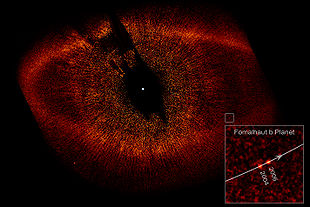

[已完結] 【DRYH+HR】【非官方酒吧團】金銀雙匙的幻境臨摹
wesly 小學部白緞生
| 651☆大中小簡繁發表於 8-28-2012 11:53 AM 只看該作者 |
| wesly 小學部白緞生
| 651☆大中小簡繁發表於 8-28-2012 11:53 AM 只看該作者  引用:原文由 MADAO 於 8-27-2012 04:56 PM 發表 「幹的好，就讓你休息一陣子吧……。」Soviet說完，就把身心的控制權還給了United。 「呼……呼……。」紗姬累的喘著氣，將顫抖的手伸進袋中拿出一根菸，接著用打火機點火抽了起來。 結合在一起的武器紛紛散開，最後飄向當初紗姬各自收納的地方。 「大叔你幹什麼？圖託理雅爾還沒有說結束呢！給我回來！」但紗姬還是勉強一個箭步抓住了奧茲的後衣領，試圖要抓他回來。 「對了，老闆！麻煩你給我來瓶中瓶的礦泉水嗎……麻煩妳了……。」她邊拉著奧茲邊說。 [ wesly 於 8-28-2012 07:44 PM 重新編輯過 ] |
| Edward_Knave 以「書記」自稱者  初等部藍綵生
| 652☆大中小簡繁發表於 8-28-2012 08:04 PM 只看該作者 第三章 預示安寧的狼藉
＜＜背景音樂：Zoë Keating《Escape Artist》＞＞ ＜＜吉坦所回復的反應種類(戰鬥／逃跑)有待決定＞＞ ＜「風之共鳴者」玄子進入被動代管狀態＞ ＜＜七子現俱可以使用希望標記回復耗竭值、反應、生命值(一枚2點)、異能值(一枚2點)、理念值(一枚3點)。＞＞ 在大廳空中的收納器開始以穩定的速度旋轉，並開始播出平靜的音樂。 見所有職員回復原狀，感到先前瀰漫的惡意一掃而空的玄子慢慢的走到吧檯前與破孔相鄰的位置，開始對著面前的麥芽汁與牛油小麵包動手。 引用:和平下來的酒吧成員，不復存的緊繃氣氛，讓哈絲默爾直覺的認為戰鬥以然結束── 引用:「欸、欸？怎麼……這樣子算結束了嗎？」 引用:「呀啊~停下來呀~！」紗姬奮力甩開手中武器，將旁邊的桌椅全都打成碎木屑。 奧茲並找不到席拉的蹤影，卻發現了一隻手懸在半空，拿著掃帚將地上的污漬擦去。在門前的透明封條已經完全散去。 然而，他愈靠近門口，他就聽見一陣低沉的吼聲，火燄騰升的聲音隨之從大門傳出。 在奧茲聽見這些聲音之後，他看見了似乎有一股錐形的疑似熱氣杵在門前，形成了無以名狀的波動，往上爬升。 「好的！」哥布林老闆在聽見紗姬的示意之後，隨即從吧檯後拿出一個盛滿礦泉水的玻璃瓶，放在吧檯上。 然而，在他發現了紗姬先前所在的位置佈滿木屑，以及桌椅的數量減少之時，老闆的身體隨即定格，這似乎只是瞠目結舌的表現。 在一瞬間，只見一陣金色的電光迸出，將所有的木屑對齊，重新排列，並將密密麻麻的裂紋完全修復，彷彿無事一般。 良久，看著桌椅憑空回復完整的老闆方才舒了一口氣。 引用:孟斯特以為戰鬥已經結束，卻見老闆完好無缺地出現在吧台後。先前擊敗的阿雷克爾、魚頭人等也都出現了。 人類執事阿雷克爾對孟斯特輕輕鞠躬過後，隨即提著輕快的腳步走進預備室，不消一分鐘就端著一瓶白蘭地，以及一個球狀的玻璃酒杯，走出預備室，放在孟斯特的眼前，將琥珀色的酒倒進酒杯。 引用:就在最後一擊之後不久，吉坦看著這些不斷出現的人們，方才殺氣騰騰的樣子已經不復見，就像是什麼都沒發生過一樣。 少頃，只見方才跑往廚房的綠髮女僕索菲雅隨即端著用高腳杯盛著的紅通通調酒，送到克坦面前。 「六種紕漏都已經成功收服了，所以－－」圖託理雅爾聽見吉坦的提問之後，隨即回答。 「看來您們應該能夠再幫我一個忙了吧？」 就在這時，從壁爐傳出了一個男孩的聲音，打斷了圖託理雅爾的發言，導修者隨即望向壁爐。 皮爾諾所知
皮爾諾睜開眼睛之際，隨即感覺到自己記憶表格內容的嘗試忽然變得異常輕鬆，在他將人偶放在肩上時，人偶悄悄地徐徐撫摸皮爾諾的頭髮。 ＜＜皮爾諾的昏睡後遺症已經過2回合。＞＞ ＜＜除非昏睡後遺症結束或被無視，否則皮爾諾的基本判定骰數降為「紀律骰(1)」，參與聯骰亦然。＞＞ ＜＜除非昏睡後遺症結束或被無視，否則皮爾諾不能發動耗竭天賦與瘋狂天賦，習得異能暫時變成【詐欺(2)】【裝小孩(1)】。＞＞ ～～～～～～～～ 一樓平面圖(如有錯誤請提出更正) ┌───┬───┬──┬────┬───┬──┬───┬──┬─────────────┬─┬──┬────────────────┐ │╲ │ ╱│██│ │ │ │□□│◆ ◆ ◆ ◆ │ │██│□□│ │ │ │ │ │□□│ │ ╲ │ ╱ │██│ │ │ │□ └─────────────┘ │██│□ ╰──────────╯ □│ │ ╲│╱ │██├ ──┤ │ ├───┤□ │██│ □│ ├───█───┤██│ │ │ │□ ┌─────────────┐ │██│ ╭───────────╮ │ ├───┼───┤██│ │ │□ │ │ │██│ │ │ │ │ │ │ │ │ ├───┼───┤██│ │ │ │□ │ │ │██│ ╰───────────╯ │ ├───┼───┼──┼ ──┴───┘ └┬──┤□ └─────────────┘ └──┘ │ ├───┼───┤┌┐│ │┌┐│□ │ │ ├───┼───┤│││ ││││□ ┌─────────────┐ │ │ ├───┼───┤└┘│ │└┘│□□│◆ ◆ ◆ ◆ │ │ │ ├───┼───┴──┴───………………┬┬┬┼┬┬┼──┼───佈───告───欄─┼─┬──┴────── │ ├───┤ │││││││ └───────────────┘ │ │ │ │││││││ │ │ │ │││││││ │ │ █────────────────█┴┴┴┴┴█ │ │ │ │ ╭─╮ │ │ ○ ○ η│●│Ψ ┌──┤ │ ╭───╮Ωα │ │ │ │ │ │△ │ ○│ │ │ │ │ ○ ○ ○ ○ ○ ○ ╰───╯ │Ρ│ │ │ │ ╭───╮ ╭───╮ ╭───╮ βΑ δ│ │ │ │ │ │ │ │ │ ◇│ │ │ │ │ ╰───╯ ╰───╯ ╰───╯ ○│△│ │ │ 大 ○ ○ ○ ○ ○ ○ ○ ○ ○ ○ │◆│ │ │ ╭───╮ ╭───╮ Σ ○│ │Φ │ │ 門 εζ│ │ ☆ │ │ │⊙│Θ │ │ ╰───╯ ╰───╯ Τ γ│ │ │ │ ○ ○ ○ ○ ○ ○ ○ ○ ○ ○ │ │ │ │ │ ╭───╮ ╭───╮ ╭───╮ Γ ○│ │ │ │ │ │ │ │ │ │ ◇│ │ │ │ │ │ ╰───╯ ╰───╯ ╰───╯ ○ ○ ○│ │ │ │ │ ○ ○ ○ ○ ○ ○ ╭───╮ │ │ │ │ │ │ │ ○│ │ │ │ │ ○ ╰───╯ │ │ │ │ │ Ε ○ ○ ○│ │ │ │ │ │ │ │ │ │ ╭─┬─╮ ○│ │ │ │ │ █───────────────█┬┬┬┬┬█ │╲│╱│ ├─┤ │ │ │ │ │││││││ ├─┼─┤ ◎╭─╯ │ │ │ │ │ │││││││ │╱│╲│ ╭─┤ │ │ │ ├───┤ │││││││ ╰─┴─╯╭┬╯█╰╮ │ │ │ ├───┼───┬──────── ┼┴┴┴┴┴┴─ ┬ ──────────────┬╯╰╮██│ │ │ │ ├───┼───┤□□□□ │□ │ │ │█╭╯ │ │ │ ├───┼───┤□□□□ │□ │ │ ╰─╯ │ │ │ ├───┼───┼──┐□ █ │□ █ │ ┌──┼────────┘ │ │ ├───┼───┤██│□ █ │□ ███ │ │██│ │ │ ├───┼───┤██│□ █ │□ █ │ │██│ │ │ ├───┼───┤██│□ │□ │ │██│ │ │ ├───█───┤██│□ │□ │ │██│ │ │ │ ╱│╲ │██│□ │ │ │██├─────────────┘ │ │ ╱ │ ╲ │██│□ │ │ │██│ │ │╱ │ ╲│██│□□□□□□□□│□□□□□□□□□□│ │██│ │ └───────┴──┴────────┴──────────┴──────────────┴──┴────────────────┘ α：皮爾諾 β：孟斯特 γ：玄子 δ：哈絲默爾 ε：奧茲．梁 ζ：奈良原紗姬 η：吉坦．戴斯 ◇：鐵盒 ☆：收納器 Φ：金．斯柏德 Θ：銀．斯柏德 Ψ：索菲雅 Ε：伊凡斯 Α：阿雷克爾 Σ：白電戰士 Γ：白電法師 Τ：白電獵戶 Ω：消災武士人形 Ρ：破財武士人形 ◎：圖託理雅爾 二樓平面圖(如有錯誤請提出更正) ┌───┬───┬─┬─────┬────┬───┬────┬───┬────┬───┬───┬─┬──┬──┬──────────┐ │╲ │ ╱│ │ │ ╲╱ │ │ ╲╱ │ │ ╲╱ │ │ │□│ │ │ │ │ ╲ │ ╱ │ │○ │ ╱╲ ├───┤ ╱╲ ├───┤ ╱╲ ├───┤ │□│ │ │ │ │ ╲│╱ │ │ └────┤ ○ └────┤ ○ └────┤ ○ └──┬┴─┤ │ │ │ ├───█───┼─┴┐ │ │ │ │██│ │ │ │ ├───┼───┤██├───┐ │ │ │ │██├ ┴ ┤ │ ├───┼───┤██│ │ ├──┐ ├──┐ │ │██│ │ │ ├───┼───┤██│ │ │ │ │ │ │ │██│ │ │ ├───┼───┤██│ │ │ │ │ │ │ ┌───┤██│ ┌──┤ │ ├───┼───┤██├───┤ ├──┤ ├──┤ │ │╲ ╱│██│ │ │ ├───┼───┤██│（□）│ │□□│ │□□│ │ │╱ ╲│██│ │ │ ├───┼───┴──┴───┴─── ┼┬┬┼┬┬┐ ┴──┴─── ┴ ┴───┴──┴ ├──┘ │ ├───┤ │││││││∅ │ │ │ │ │││││││ ╭╯ │ │ │ │││││││ ╭╯ │ │ █────────────────█┴┴┴┴┴█──────────────────────╯ │ │ │ │ │ │ │ │ │ │ │ │ │ │ │ │ │ │ │ │ ２／Ｆ │ │ │ │ │ │ │ │ │ │ │ │ │ │ │ │ │ │ │ │ │ │ │ │ │ │ │ │ █───────────────█┬┬┬┬┬█───────────────█ │ │ │ │││││││ │ │ │ │ │││││││ │ │ ├───┤ │││││││ │ │ ├───┼───┬──┬ ─────┼┴┴┴┴┴┼─┬──┬─────── ┴┬──┬──┐ │ ├───┼───┤██│ │＞＞╳＜＜│□│ │ │＞＜│██│ │ ├───┼───┤██│ ├─────┤□│ │ ├──┤██│ │ ├───┼───┤██│ │ ├─┼──┘ │╲╱│██├────┐ │ ├───┼───┤██│ │ │╳│ │╱╲│██│ │ │ ├───┼───┤██│ ┌─────┬ ──┼─┴────┐ ├──┤██│ │ │ ├───┼───┤██│ │ │ │ │ │＞＜│██│ ──┤ │ ├───█───┼─┬┘ │ │ │ │ ├──┴──┤ │ │ │ ╱│╲ │ │ │ │ │ │ ○ ○ ○ └─────┘ │ │ │ ╱ │ ╲ │ │○ ├─────┤ ├──────┼───────┐ │ │ │ │╱ │ ╲│ │ │（□╳□）│ │（□）（□）│ │ │ │ │ └───────┴─┴───┴─────┴─────┴──────┴───────┴─────────┴──┴───────────┘ ∅：歐希迪恩 場外發言：其實，第三章的劇本在開團的時候是一個字都沒有的。 因為我需要從帶團時形成的紕漏取得這一章的靈感，所以從這裡開始可以確定是即興的部分。 現在正在畫圖，如無意外，下一回合將會開始最後一「戰」。 回應： MADAO - ……(思)……我去問問玄子的意見吧。(寄悄悄話) Hazmole - 這個嘛，如果要調回復藥的話，痛苦骰方面的難度將會是3。製藥將會由老闆負責執行，不過他只會依照哈絲默爾的指示去辦。雖然哈絲默爾側的骰還是要閣下去擲，但是哈絲默爾不會承受任何領域勝利的效果。不過，他應該只會有煉一次藥的空閒，所以我就只能讓閣下煉一瓶回復藥而已。  ＜＜回復藥：使用時作出2d3判定。每遇一個1點則回復1+X點生命值，每遇一個2點則回復1+X點異能值，每遇一個3點則回復1+X點理念值。當中，X等於判定成功時雙方的成功骰差距。＞＞ (第八十三帖：安寧過後的求助) [ Edward_Knave 於 8-28-2012 10:43 PM 重新編輯過 ] | ||||||||||||||||||||||||||||||||||||||||||||||||||||||||||||||||||||||||||||||||||||||||
玄子 小學部黃綾生
| 653☆大中小簡繁發表於 8-28-2012 08:49 PM 只看該作者 引用:見所有職員回復原狀，感到先前瀰漫的惡意一掃而空的玄子慢慢的走到吧檯前與破孔相鄰的位置，開始對著面前的麥芽汁與牛油小麵包動手。 引用:「來、來了！您的血腥瑪莉來了……」 腦子不太好使的他半垂著眼打了個呵欠，卻是稍稍注意了一下來者的語氣、以及可能存在的情緒之類。(將持續關注v) 首先可能是認識圖少年的人？或者說，跟圖少年所在的機構（大概）有關的人。但剛剛那家伙看起來是想說「已經結束了」這種話吧，突然冒出來的人類卻說「再幫一個忙」甚麼的……圖少年的計劃之外咧。 妖怪晃晃頭，卻是沒辦法想到更多了－－管他的。 身上的傷口還在痛，玄子現在稍微有點困……等等，怎會有種不能睡覺的奇怪感覺？ 【行動確認】 - 場外： 回來鳥=W= 於是經商議(X)後選擇用希望標記X1回復HP2點  >>MADAO 欸欸欸是這樣啊……咱還在猶豫(望 希望標記才6個咧……還是說先試試回復藥？0v0 >>Haz 嗯……好的www 那回復藥省下來好了！ Haz加油//w [ 玄子 於 8-29-2012 02:12 PM 重新編輯過 ] |
Hazmole 新手輔導員
| 654☆大中小簡繁發表於 8-28-2012 09:31 PM 只看該作者 引用:在哈絲默爾期待混亂之際，他忽然聽見了一陣低沉的吼聲與木材燃燒的聲音，聲音來源卻是無法判斷。 ──那麼，是刻又要有那混亂將起？無妨，無妨──但念那後援之需…… 雖然瘋狂但非無謀，哈絲默爾將身體往酒吧吧檯移動，彷彿方才什麼事都沒發生般，對著先前曾經痛歐的哥不林老闆打了聲招呼：「嘿──異界的子民，是否能一假那偉大的調藥室？一合那催人入魂的魔藥？」 說著拿出了幾個空瓶子，跟回復藥水的配方，推到了老闆面前：「嘿嘿，山雨欲來的支援，能否平安渡過呢？」 哈絲默爾 (Hazmole)的「【藥品煉製（１）】」 擲了「9 d 6 + 0」 ，擲出「4、2、2、1、4、5、4、6、2」，總合為「30」。 【行動確認】 ＝＝＝＝ 既然沒有領域影響那就不鍊白不鍊啦ＸＤ 然後忽然很想等一下打ｂｏｓｓ時躲到後台鍊炸藥出來扔 [ Hazmole 於 8-29-2012 05:22 PM 重新編輯過 ] |
| wesly 小學部白緞生
| 655☆大中小簡繁發表於 8-28-2012 09:39 PM 只看該作者 引用:原文由 Edward_Knave 於 8-28-2012 08:04 PM 發表 最後紗姬將玻璃瓶自嘴上拿開，仰著頭用剩餘的礦泉水沖著自己的臉龐，水自臉頰快速的流下，浸濕了紗姬的一大塊衣領。 ==============================場外============================ 好了，再說就下去就要R-18了.......。 |
| 藍刺蝟 掛機刺蝟娘  新手輔導員
| 656☆大中小簡繁發表於 8-28-2012 10:26 PM 只看該作者 引用:在大廳空中的收納器開始以穩定的速度旋轉，並開始播出平靜的音樂。 不，等等，這是什麼情況？還放了音樂這…… 想到音樂，孟斯特皺起眉頭，聯想到皮爾諾和奧茲的音樂力量，於是試圖忽略掉那陣樂音。他找尋其他可以集中注意力的地方－－ －－這時，他聽到圖托理雅爾的說話、以及另一道男聲從壁爐傳來－－是個男孩的聲音。 「嗯？幫你的忙？」偵探快步走向壁爐，「喔，你該不會就是什麼『補課者』吧？我們的課後輔導要開始了－－嗎？」他說著，突然一陣厭惡感襲來－－他將手中的酒水盡數到進壁爐裡。 「哎呀－－我 不 小 心 的。」孟斯特冷笑著說道。從語氣聽得出來他的怒火已經開始燃燒了…… 【行動確認】 －－－－－－場外線 我猜測這將會是一場沒有戰鬥的戰鬥 也許會以解機關或是問答的方式呈現吧XD 不確定壁爐裡的男孩是否是劉子乾……他沒有用「閣下」的口癖XD [ 藍刺蝟 於 8-29-2012 03:36 PM 重新編輯過 ] |
MADAO 小學部白緞生
| 657☆大中小簡繁發表於 8-28-2012 10:50 PM 只看該作者 引用:原文由 Edward_Knave 於 8-28-2012 08:04 PM 發表 ──『不過枉我心心念念魂牽夢縈只為妳一人，妳卻只露隻手，連面也不肯讓我見上一面。落花有意流水無情，癡心瞎戀死纏爛打又有何用？罷了罷了，事已至此，多留無益，不如歸去、不如歸去！四張機，鴛鴦織就欲雙飛，可憐未老頭先白……』 上演了這麼一段三流廉價的古裝言情內心戲，便帶著滿腹心酸憔悴低著頭往大門再行，連和戰友們道別的話都忘了要說。 走近門口發現封條已解，才想著這下總算可以離開這傷心地一去永不回，便聽見耳畔傳來一陣令人不安、像是某種猛獸的低吼，隱約還有火焰升騰燃燒的聲音。 不安的感覺令他本能地在門口前停下腳步。抬頭一望，眼前一道熱氣呈錐型環繞攀升，這是…… 「這是什麼情形……」奧茲身體僵了一陣，順著原路倒退，一路退到吧檯邊。 顫抖著聲音對老闆問：「那、那個老闆……你、你們酒吧除了這幾個員工之外，還有養什麼看起來嬌弱、親切、可愛、人畜無害……但是可能會噴火或者自體燃燒的小寵物嗎？」從顫抖的聲線和額頭不斷冒汗的情況來看，可見他是完全被那聲音和聲音的主人給嚇怕了。 -- 天殺的牠居然就堵在門口(艸) 聲望： 就當作沒拉到吧，反正門口的情況也探查完了(′．ω．‵) [ MADAO 於 8-29-2012 02:11 PM 重新編輯過 ] |
| 凱琳 「傍観者」  初等部白緞生
| 658☆大中小簡繁發表於 8-29-2012 02:09 PM 只看該作者 引用:原文由 Edward_Knave 於 8-28-2012 08:04 PM 發表 邊想著別的，青年感覺到肩上的人形正在摸自己的頭髮。 還真是……想放鬆又放鬆不下來的狀況？ 慣性托了托不存在的眼鏡，青年繼續戒備著。 引用:原文由 Edward_Knave 於 8-28-2012 08:04 PM 發表 －－ 【行動確認】，要怎樣令不喜多言的諾斯開話術啊（苦思） |
北楼真茂 小學部藍綵生
| 659☆大中小簡繁發表於 8-30-2012 01:24 AM 只看該作者 引用:在大廳空中的收納器開始以穩定的速度旋轉，並開始播出平靜的音樂。 吉坦感覺腦袋裏頭的轉速又慢慢回復了，於事便開始想問有沒有什麼好吃的，「有沒有麵包之類的東西啊～」 ＜＜反應恢復選擇：戰鬥反應＞＞ 引用:「六種紕漏都已經成功收服了，所以－－」圖託理雅爾聽見吉坦的提問之後，隨即回答。 【行動確認】 ＝＝＝＝＝＝＝＝＝＝＝＝＝＝＝＝＝＝場外 看來下一回合就是爆點惹(`･ω･´) |
| Edward_Knave 以「書記」自稱者 初等部藍綵生
| 660☆大中小簡繁發表於 8-30-2012 02:45 AM 只看該作者 第三章 預示安寧的狼藉
～～～～～～～～～～～～ ＜＜七子現俱可以使用希望標記回復耗竭值、反應、生命值(一枚2點)、異能值(一枚2點)、理念值(一枚3點)。＞＞ 引用:邊想著別的，青年感覺到肩上的人形正在摸自己的頭髮。
黑色的人偶看著皮爾諾的眼神，試圖了解他沒說出口的提問。 過了一段時間之後，它隨即試圖回答皮爾諾心裡的問題。 「……是『補課者』的聲音。不過我不知道他在打算作甚麼就是…………」 引用:雖然瘋狂但非無謀，哈絲默爾將身體往酒吧吧檯移動，彷彿方才什麼事都沒發生般，對著先前曾經痛歐的哥不林老闆打了聲招呼：「嘿──異界的子民，是否能一借那偉大的調藥室？一合那催人入魂的魔藥？」 哥布林老闆欣然應允，隨即拿著配方與瓶子走進廚房。 過了一段時間，只見他從廚房拿出兩個載滿綠色藥湯的藥瓶與本來的藥方，放在哈絲默爾面前，隨後向哈絲默爾提問。 「哈哈哈哈……這配方真有意思……如果可以的話，客人可以告訴我這當中的藥效嗎？」 同時，金色的人偶不知何時已經跳上吧檯，出神的盯著眼前的藥瓶。 引用:「這是什麼情形……」奧茲身體僵了一陣，順著原路倒退，一路退到吧檯邊。 調藥過後，哥布林老闆隨即望向奧茲，抓了幾下頭，試圖回答奧茲的問題。 引用:吉坦感覺腦袋裏頭的轉速又慢慢回復了，於是便開始想問有沒有什麼好吃的，「有沒有麵包之類的東西啊～」  」 」老闆回答奧茲的問題過後，只見老闆娘從老闆在吧檯後的手上接過了盛著小麵包的盤子，放在吉坦面前。 引用:「嗯？幫你的忙？」偵探快步走向壁爐，「喔，你該不會就是什麼『補課者』吧？我們的課後輔導要開始了－－嗎？」他說著，突然一陣厭惡感襲來－－他將手中的酒水盡數到進壁爐裡。 引用:「王牌果然是最後才打的，」吉坦放下杯子，朝著出聲的壁爐看了一眼，「出聲的是比導修者更高層的頭頭？還是來接我們走的引路人？」 半分鐘後，只見一名身穿黑衣的黑髮男孩從壁爐鑽出，一如孟斯特所預料的狼狽，貌似被淋濕了的樣子。 「沒甚麼…… 我名叫雷梅狄雅爾，與『導修者』的職責一樣。 我只是想您們收服我在監督試驗時找出的紕漏而已。」 只見黑髮男孩舉手握拳，疑似七子的身影憑空出現在他的身邊，隨之出現的亦有哈絲默爾先前所召喚過的白色邪神； 在他身邊的圖託理雅爾則忽然被憑空出現的微型卷軸縛住，難以動彈。 「這裡總共有九項紕漏。我想您們會幫我處理這些紕漏的，對吧？」 雷梅狄雅爾盯著孟斯特等人，所掛上的笑容亦隨之變得更為詭異。 就在這時，大門前燃起了一個八邊形的火圈。 孟斯特所知 據孟斯特觀察，他發現了面前所有出現的身影俱與先前用作教學的「模擬機體」存在著不少共通點。 玄子所知 在雷梅狄雅爾的話語之中，玄子感到了一種假手於人的惡意。 奧茲所知 奧茲從火圈燃起之處隱約聽見一段男聲。 「來吧。偉大的歐希迪恩奉『統治者』之命……」 接下來的聲音被火燄熊熊之聲覆蓋，聽不清楚。 紗姬所知 紗姬從雷梅狄雅爾的表情可見，隨即發現了他還沒說出事實的全部。 吉坦所知 在雷梅狄雅爾所喚出的身影之中，吉坦可以發現每一人與本體的差別俱擁有獨特象徵，與先前的「模擬機體」的暗示類似。 ＜＜皮爾諾的昏睡後遺症已經過3回合。＞＞ ＜＜除非昏睡後遺症結束或被無視，否則皮爾諾的基本判定骰數降為「紀律骰(1)」，參與聯骰亦然。＞＞ ＜＜除非昏睡後遺症結束或被無視，否則皮爾諾不能發動耗竭天賦與瘋狂天賦，習得異能暫時變成【詐欺(2)】【裝小孩(1)】。＞＞ ～～～～～～～～ 一樓平面圖(如有錯誤請提出更正) ┌───┬───┬──┬────┬───┬──┬───┬──┬─────────────┬─┬──┬────────────────┐ │╲ │ ╱│██│ │ │ │□□│◆ ◆ ◆ ◆ │ │██│□□│ │ │ │ │ │□□│ │ ╲ │ ╱ │██│ │ │ │□ └─────────────┘ │██│□ ╰──────────╯ □│ │ ╲│╱ │██├ ──┤ │ ├───┤□ │██│ □│ ├───█───┤██│ │ │ │□ ┌─────────────┐ │██│ ╭───────────╮ │ ├───┼───┤██│ │ │□ │ │ │██│ │ │ │ │ │ │ │ │ ├───┼───┤██│ │ │ │□ │ │ │██│ ╰───────────╯ │ ├───┼───┼──┼ ──┴───┘ └┬──┤□ └─────────────┘ └──┘ │ ├───┼───┤┌┐│ │┌┐│□ │ │ ├───┼───┤│││ ││││□ ┌─────────────┐ │ │ ├───┼───┤└┘│ │└┘│□□│◆ ◆ ◆ ◆ │ │ │ ├───┼───┴──┴───………………┬┬┬┼┬┬┼──┼───佈───告───欄─┼─┬──┴────── │ ├───┤ │││││││ └───────────────┘ │ │ │ │││││││ │ │ │ │││││││ │ │ █────────────────█┴┴┴┴┴█ │ │ │ │ ╭─╮ │ │ ○ ○ η│●│Ψ ┌──┤ │ ╭───╮Ωα │ │Θ │ │ │ │△ │ ○│ │ │ │ │ ○ ○ ○ ○ ○ ○ ╰───╯ │Ρ│ │ │ │ ╭───╮ ╭───╮ ╭───╮ ○Α○ δ│ │ │ │ ╭╭─╮╮ │ │ │ │ │ ◇│ │ │ │ │ ╭╯ ╰╮╰───╯ ╰───╯ ╰───╯ ○│△│ │ │ 大 ╭ ╮ ○ ○ ○ ○ ○ ○ ○ ○ ○ ○ │◆│ │ │ │ │ ╭───╮ ╭───╮ Σ ○│ │ │ │ 門 ╰ ╯ │ │ ☆ │ │ │⊙│ │ │ ╰╮ ╭╯ ╰───╯ ╰───╯ Τ γ│ │ │ │ ╰╰─╯╯ ○ ○ ○ ○ ○ ○ ○ ○ ○ ○ │ │ │ │ │ ╭───╮ ╭───╮ ╭───╮ Γ ○│ │ │ │ │ │ │ │ │ │ ◇│ ε│ │Φ │ │ │ ╰───╯ ╰───╯ ╰───╯ ○ ○ ○│ │ │ │ │ ○ ○ ○ ○ ○ ○ ╭───╮ ζ │ │ │ │ │ │ │ ○│ │ │ │ │ ╰───╯ │ │ │ │ │ Ε ○ ○ ○│◇│ │ │ │ β │ │ │ │ │ ╭─┬─╮ ◎ ○│◇│ │ │ │ █───────────────█┬┬┬┬┬█ │╲│◇│ ♁ ◇◇├─┤ │ │ │ │ │││││││ ├─┼─┤ ◇ ╭─╯ │ │ │ │ │ │││││││ │◇│╲│◇ ╭─┤ │ │ │ ├───┤ │││││││ ╰─┴─╯╭┬╯█╰╮ │ │ │ ├───┼───┬──────── ┼┴┴┴┴┴┴─ ┬ ──────────────┬╯╰╮██│ │ │ │ ├───┼───┤□□□□ │□ │ │ │█╭╯ │ │ │ ├───┼───┤□□□□ │□ │ │ ╰─╯ │ │ │ ├───┼───┼──┐□ █ │□ █ │ ┌──┼────────┘ │ │ ├───┼───┤██│□ █ │□ ███ │ │██│ │ │ ├───┼───┤██│□ █ │□ █ │ │██│ │ │ ├───┼───┤██│□ │□ │ │██│ │ │ ├───█───┤██│□ │□ │ │██│ │ │ │ ╱│╲ │██│□ │ │ │██├─────────────┘ │ │ ╱ │ ╲ │██│□ │ │ │██│ │ │╱ │ ╲│██│□□□□□□□□│□□□□□□□□□□│ │██│ │ └───────┴──┴────────┴──────────┴──────────────┴──┴────────────────┘╭─╮╰─╯ α：皮爾諾 β：孟斯特 γ：玄子 δ：哈絲默爾 ε：奧茲．梁 ζ：奈良原紗姬 η：吉坦．戴斯 ◇：鐵盒 ☆：收納器 Φ：金．斯柏德 Θ：銀．斯柏德 Ψ：索菲雅 Ε：伊凡斯 Α：阿雷克爾 Σ：白電戰士 Γ：白電法師 Τ：白電獵戶 Ω：消災武士人形 Ρ：破財武士人形 ◎：圖託理雅爾 ♁：雷梅狄雅爾 ◇：模擬機體 二樓平面圖(如有錯誤請提出更正) ┌───┬───┬─┬─────┬────┬───┬────┬───┬────┬───┬───┬─┬──┬──┬──────────┐ │╲ │ ╱│ │ │ ╲╱ │ │ ╲╱ │ │ ╲╱ │ │ │□│ │ │ │ │ ╲ │ ╱ │ │○ │ ╱╲ ├───┤ ╱╲ ├───┤ ╱╲ ├───┤ │□│ │ │ │ │ ╲│╱ │ │ └────┤ ○ └────┤ ○ └────┤ ○ └──┬┴─┤ │ │ │ ├───█───┼─┴┐ │ │ │ │██│ │ │ │ ├───┼───┤██├───┐ │ │ │ │██├ ┴ ┤ │ ├───┼───┤██│ │ ├──┐ ├──┐ │ │██│ │ │ ├───┼───┤██│ │ │ │ │ │ │ │██│ │ │ ├───┼───┤██│ │ │ │ │ │ │ ┌───┤██│ ┌──┤ │ ├───┼───┤██├───┤ ├──┤ ├──┤ │ │╲ ╱│██│ │ │ ├───┼───┤██│（□）│ │□□│ │□□│ │ │╱ ╲│██│ │ │ ├───┼───┴──┴───┴─── ┼┬┬┼┬┬┐ ┴──┴─── ┴ ┴───┴──┴ ├──┘ │ ├───┤ │││││││∅ │ │ │ │ │││││││ ╭╯ │ │ │ │││││││ ╭╯ │ │ █────────────────█┴┴┴┴┴█──────────────────────╯ │ │ │ │ │ │ │ │ │ │ │ │ │ │ │ │ │ │ │ │ ２／Ｆ │ │ │ │ │ │ │ │ │ │ │ │ │ │ │ │ │ │ │ │ │ │ │ │ │ │ │ │ █───────────────█┬┬┬┬┬█───────────────█ │ │ │ │││││││ │ │ │ │ │││││││ │ │ ├───┤ │││││││ │ │ ├───┼───┬──┬ ─────┼┴┴┴┴┴┼─┬──┬─────── ┴┬──┬──┐ │ ├───┼───┤██│ │＞＞╳＜＜│□│ │ │＞＜│██│ │ ├───┼───┤██│ ├─────┤□│ │ ├──┤██│ │ ├───┼───┤██│ │ ├─┼──┘ │╲╱│██├────┐ │ ├───┼───┤██│ │ │╳│ │╱╲│██│ │ │ ├───┼───┤██│ ┌─────┬ ──┼─┴────┐ ├──┤██│ │ │ ├───┼───┤██│ │ │ │ │ │＞＜│██│ ──┤ │ ├───█───┼─┬┘ │ │ │ │ ├──┴──┤ │ │ │ ╱│╲ │ │ │ │ │ │ ○ ○ ○ └─────┘ │ │ │ ╱ │ ╲ │ │○ ├─────┤ ├──────┼───────┐ │ │ │ │╱ │ ╲│ │ │（□╳□）│ │（□）（□）│ │ │ │ │ └───────┴─┴───┴─────┴─────┴──────┴───────┴─────────┴──┴───────────┘ ∅：歐希迪恩 場外發言：這也許算是合照吧，某意義上。(七子圍毆) 回應：各位對不起……以我手上的情報，我已經盡力了…… ||| 貓a - 我已經料到閣下會有收版稅的打算。我也準備好要付版稅，那就是3.0版平面圖的轉換。  (十三匹圍攻) (十三匹圍攻)(第八十四帖：惡劣的補課) [ Edward_Knave 於 8-31-2012 02:59 AM 重新編輯過 ] | ||||||||||||||||||||||||||||||||||||||||||||||||||||||||||||||||||||||||||||||||||||||||||||||||||||
| 玄子 小學部黃綾生
| 661☆大中小簡繁發表於 8-30-2012 09:26 AM 只看該作者 引用:壁爐裡的聲音並沒有回應。 引用:「這裡總共有九項紕漏。我想您們會幫我處理這些紕漏的，對吧？」 「咱們為什麼要幫你處理紕漏？嗯？」警戒模式半開的妖怪冷笑，臉上除了譏誚之色再無其他。「而且，不先報上自己的名字身份目的來頭報酬工作詳情等等就讓人干活很沒禮貌咧，人類。」說罷他倏的拿起身旁的空杯子往那家伙身上扔去，存心要讓他頭破血流的樣子。 玄子緊緊注意著他的臉，觀察其表情變化之時，危機感驀然徐徐升上。 男孩身上的水滴緩緩滴落，上衣幾近半透明……只是，那杯水他娘的是偵探扔的吧？之前也對圖託理雅爾做過差不多的事情，卻是穿過了。……喂喂，這是實體？至少是身處同一空間的生物咧。應該不只是圖少年的意料之外，簡直是整個計劃之外的突發事件吧。 只是，圖託理雅爾明明是投影，到底是怎樣被縛住的。妖怪從吧檯跳到地上，伸手想碰碰圖少年身上的微型卷軸。碰不到的，妖怪很清楚這點。圖少年是在自己的世界被縛住了吧，接著投影而此…… 懶得去想那家伙會不會回答，玄子扭頭向黑色人偶問道：「補課者是甚麼？反正圖少年現在不能說話，把你知道的都說出來比較好咧。」不說出來就捏你，妖怪的目光在黑色人偶身上意味不明地留連著。 【行動確認】 - 場外： 是說，圖少年這樣被縛住很工口對吧！並不是只有咱這樣想對吧！  雷少年被水淋濕也很工口對吧！並不是只有咱這樣想對吧！！！ 是說酒吧有新增壁爐嗎？ＸＤ [ 玄子 於 8-30-2012 09:19 PM 重新編輯過 ] |
| wesly 小學部白緞生
| 662☆大中小簡繁發表於 8-30-2012 11:01 AM 只看該作者 引用:原文由 Edward_Knave 於 8-30-2012 02:45 AM 發表 「…喔…還是應該叫你~平行導修者雷梅狄雅爾？」紗姬詭異的瞪著雷梅狄雅爾，接著笑而不語的看著他。 「看來實驗場不只一個，對吧？而且兩者的試驗還不盡相同，我們處理紕漏讓實驗回歸正常。相反的，你們則處理正常程序，來讓 實驗陷入混亂。」 「而且您說有九項紕漏？看來這個意思是要我們對付自己還有歐希迪恩與……你嗎？」紗姬露出恐怖的眼神直視著雷梅狄雅爾 問。 場外： 糟糕，有種想要畫大合照的感覺 [ wesly 於 8-30-2012 06:40 PM 重新編輯過 ] |
| 凱琳 「傍観者」 初等部白緞生
| 663☆大中小簡繁發表於 8-30-2012 08:22 PM 只看該作者 引用:原文由 Edward_Knave 於 8-30-2012 02:45 AM 發表 「……應變措施？」然而，注意到表格的字眼變更時不得不皺眉。 引用:原文由 Edward_Knave 於 8-30-2012 02:45 AM 發表 這樣想著，青年沒有說話，以沉默表示他跟隨大家的決定。 －－ 【行動確認】 |
| 藍刺蝟 掛機刺蝟娘 新手輔導員
| 664☆大中小簡繁發表於 8-30-2012 09:01 PM 只看該作者 引用 引用:壁爐裡的聲音並沒有回應。 引用:「好噁心的感覺……」妖怪死盯著從壁爐鑽出笑容詭譎的男孩，那股惡意的臭味濃烈得幾乎要讓他當場失控，去給那家伙一爪子或者將他掀翻狠狠咬下。「嘖。人類就是人類，即使是幼崽也這麼討厭……這家伙絕對不懷好意咧，那甚麼突然冒出的紕漏也絕對不好惹。」 引用:「紕漏已經被我們解除了，工作也做的差不多了，你還有事情找我們嗎？導修者……。」 「嗯……」孟斯特夾起口中的菸，丟到地上踩熄。 「你該不會……」他拿出另一根菸，咬著，並沒有點燃它，「認為我們會同意吧？」他用鄙視的眼光看著雷梅狄雅爾。 見到玄子的舉動，孟斯特也倏地扔出空杯子，朝著自己的「影像」扔過去！ 有趣，看看會有何反應！ 對於圖托理雅爾的慘狀以及紗姬的問話，他沒多做表示。 「想要我們加班，先付一半的薪水吧，小屁孩。」偵探笑著對雷梅狄雅爾說道。 還出現了些品味獨特的「裝飾品」。 孟斯特查覺到除了七人的身型出現外，還伴隨著一些類似機關的物品……不，該說誰都會察覺到吧！ －－－－－－場外線 哈絲默爾和骰神大人被關在透明管子裡，上方六人背後還飄著些奇怪的東西。 我想這不是要打鬥。解機關吧！ 是說GM給的：據孟斯特觀察，他發現了面前所有出現的身影俱與先前用作教學的「模擬機體」存在著不少共通點。 是甚麼共通點？？要背後靈自己觀察嗎？！  |
| Hazmole 新手輔導員
| 665☆大中小簡繁發表於 8-30-2012 10:03 PM 只看該作者 引用:「啊－－哈哈哈哈……這一帖藥看來有點奇怪，我只好盡力而為了，請稍候！」 引用:壁爐裡的聲音並沒有回應。 「嘿嘿──崇尚金錢的異界之民啊，不如如此？」哈絲默爾將回復藥的藥方往前推，順便再加上了另一張火藥的合成表：「這帖密藥的奧祕就當作交易之禮予汝，可否在幫我煉製那驚人的克圖格亞的祝福？」 這麼說著，而那火藥的合成表上的標題也的確是這麼幾個字──「克圖格亞的祝福」。 ＝＝＝＝ 如果金老闆同意我再骰好了…… 然後我想讓哈絲桑被戰火波及之後，再加入戰團。感覺那比較有趣ｗｗ to凱琳： 我只依稀記得一開始好像亂點過什麼東西……回去翻翻…… [ Hazmole 於 8-30-2012 11:00 PM 重新編輯過 ] |
| Edward_Knave 以「書記」自稱者 初等部藍綵生
| 666☆大中小簡繁發表於 8-31-2012 02:43 AM 只看該作者 第三章 預示安寧的狼藉
～～～～～～～～～～～～ ＜＜七子現俱可以使用希望標記回復耗竭值、反應、生命值(一枚2點)、異能值(一枚2點)、理念值(一枚3點)。＞＞ 引用 引用:青年點點頭算是回應人偶。 「『那邊』的人開始行動了，不過這應該沒可能是您們的問題。」黑色人偶聽見皮爾諾的疑問過後，試圖作出詮釋。 引用 引用:「紕漏已經被我們解除了，工作也做的差不多了，你還有事情找我們嗎？導修者……。」 「我…我不是『導修者』，是『補課者』，雖然職能與『導修者』一樣。 另外，我們只是在實驗環境注入了『造影劑』，好讓外界的人可以實在地看見紕漏，從而依照線索修正之。 至於面前的九項紕漏……閣下自然一目了然。」 雷梅狄雅爾在紗姬的怒視之下懾住了一秒，隨即回答。 紗姬、孟斯特所知 雷梅狄雅爾並沒有說謊，只是還有掩飾著一些事項。 引用 引用:「好噁心的感覺……」妖怪死盯著從壁爐鑽出笑容詭譎的男孩，那股惡意的臭味濃烈得幾乎要讓他當場失控，去給那家伙一爪子或者將他掀翻狠狠咬下。「嘖。人類就是人類，即使是幼崽也這麼討厭……這家伙絕對不懷好意咧，那甚麼突然冒出的紕漏也絕對不好惹。」 就在這時，玄子一手將空杯朝著雷梅狄雅爾扔過去，直接命中右額。 在玻璃杯打中右額，並隨之碎裂的時候，補課者隨即以迅速的手法抓住玻璃碎片，放在吧檯上靠牆的角落。 同一時間，眾人可見他的額上已流下一道血跡，右手亦有染血。 「我以為這對您們來說只是舉手之勞而已……看來這有點困難呢。 我在您們收服紕漏的時候，同時找到了這些，不過這不是環境本身的紕漏，而是人類所無法避免的疏忽。 不過這樣子……也可以證明物理演算的紕漏確實被您們成功收服了……」 雷梅狄雅爾抹著額上的血跡，如此應道。 「呃……是的！ 『補課者』在這實驗環境裡負責製作模擬機體以及『造影劑』的『調合』。 不過他還沒知道這些『造影劑』在實際除錯的過程會為紕漏賦予甚麼形態…… 就算是他都能只知道大致的法則，他也只能藉此製作對應的『模擬機體』，去猜那些紕漏的形體會是怎樣的。 然而，在製作『模擬機體』方面，聽說只要是他能想像的形狀與效果，他都能造出來……」 在玄子怪異的注視，黑色的人形漸漸地將它所知的都說出來了。 引用 引用:「嘿嘿──崇尚金錢的異界之民啊，不如如此？」哈絲默爾將回復藥的藥方往前推，順便再加上了另一張火藥的合成表：「這帖密藥的奧祕就當作交易之禮予汝，可否在幫我煉製那驚人的克圖格亞的祝福？」 「哈哈哈哈！剛才的藥方奇怪，這張藥方更奇怪！只是……先讓我們檢查一下我們有沒有材料吧……」 老闆的話語剛落，老闆娘隨即拿走火藥的合成表，走進預備室。 「『克圖格亞』……何物以此為名？」在老闆娘拿去合成表之後，金色人偶隨即對哈絲默爾問道。 ＜＜哈絲默爾的炸藥煉製指揮可以第七十六回合往後開始。＞＞ 引用 引用:「嗯……」孟斯特夾起口中的菸，丟到地上踩熄。 話分兩頭，孟斯特拿起酒杯扔往坐著內裡冒著紅煙的透明炸彈之人。 然而，有別於補課者的後知後覺，黑瞳青年在酒杯擲中之前迅速的以左手將酒杯接住。 「這樣子……這些紕漏放著不管的話，對各位也不是好處……」 雷梅狄雅爾揚起雙手，對應於七子的形體與白色邪神像隨即同步地別過頭去盯著眾人，而圖託理雅爾身上的卷軸則現出文字，墨跡逃出紙張，懸在半空。 就在這時，一段老人之聲從火圈處傳出，迴響重重，響遍酒吧，氣勢磅礡，銘刻在眾人之心，彷彿真神之音。 「『補課者』，休得放肆！」 迴響一散，火圈隨即更為旺盛。 「沒有東西可以逃過偉大的歐希迪恩的法眼！有種的話就儘管去逃吧！」 火圈燃起過後，一段青年的聲音再從火圈處傳出。 ＜＜若要跨過火圈，則須作出判定。若言之成理，則可以使用基本判定以外的能力，否則只使用基本判定亦可。＞＞ 皮爾諾所知 在火圈燃起的同時，皮爾諾發現表格裡的文字改變了。
皮爾諾看見火圈由不同高度的火燄組成，要跨過火圈的話，難度可能會因火舌高度而異。 特殊戰鬥規則(凱琳所知) 在「跨過火圈」的判定，玩家可以在擲骰的時候可以隨意決定GM可擲的痛苦骰數量。 孟斯特所知 在黑色人偶的提示與雷梅狄雅爾的反應之下，孟斯特開始確認雷梅狄雅爾所喚出的身影被賦以與先前出現的「模擬機體」類似的象徵意義，然而，這些「模擬機體」在物理意義上卻與七子類似。換言之，如果它們在雷梅狄雅爾的指揮之下發動攻擊的話，它們將能對七子造成類同的影響。 特殊戰鬥規則(藍刺蝟所知) 在戰鬥中的每一回合，將會有至少其中一台模擬機體對七子發動攻擊，在迴避失敗時以直接傷害判定論，直到戰鬥結束為止。 玄子所知 哈絲默爾所知 奧茲所知 奧茲從火圈燃起之處再度聽見一段男聲。 「來吧。偉大的歐希迪恩奉『統治者』之命為各位『參與者』引路，過來這裡吧。」 火圈雖然燒得更旺，青年的聲音卻更為清楚，奧茲亦隨之知道「逃」反而就是以歐希迪恩自稱的青年期待七子會作的事。 特殊戰鬥規則(MADAO所知) 只要經過GM的個別指示，並遵照固定條件成功跨過火圈，即可脫離戰場。 紗姬所知 從火圈處傳來的熱風與聲音，紗姬感覺到要跨過火圈，恐怕須要摒除一切由理智所喚起的恐懼。 特殊戰鬥規則(wesly所知) 七子在此場景之中，須要各自在與補課者交戰的判定或「跨過火圈」的判定裡達成瘋狂領域勝利(起始瘋狂場合則為紀律領域勝利)，從而消耗一次逃跑反應方可成功跨過火圈。 吉坦所知 在黑色人偶的提示與雷梅狄雅爾的應答之下，吉坦開始確認雷梅狄雅爾所喚出的身影被賦以與先前出現的「模擬機體」類似的象徵意義。然而，如果雷梅狄雅爾願意的話，這些「模擬機體」將會被賦以免疫於直接殺傷影響之能力。 特殊戰鬥規則(北楼真茂所知) 補課者與模擬機體並不會因為攻擊而承受傷害。除非達成另一條件，否則戰鬥將在七子全體戰鬥不能或夢魘化時結束，作滅團論。 ＜＜皮爾諾的昏睡後遺症時效結束。＞＞ ～～～～～～～～ 一樓平面圖(如有錯誤請提出更正) ┌───┬───┬──┬────┬───┬──┬───┬──┬─────────────┬─┬──┬────────────────┐ │╲ │ ╱│██│ │ │ │□□│◆ ◆ ◆ ◆ │ │██│□□│ │ │ │ │ │□□│ │ ╲ │ ╱ │██│ │ │ │□ └─────────────┘ │██│□ ╰──────────╯ □│ │ ╲│╱ │██├ ──┤ │ ├───┤□ │██│ □│ ├───█───┤██│ │ │ │□ ┌─────────────┐ │██│ ╭───────────╮ │ ├───┼───┤██│ │ │□ │ │ │██│ │ │ │ │ │ │ │ │ ├───┼───┤██│ │ │ │□ │ │ │██│ ╰───────────╯ │ ├───┼───┼──┼ ──┴───┘ └┬──┤□ └─────────────┘ └──┘ │ ├───┼───┤┌┐│ │┌┐│□ │ │ ├───┼───┤│││ ││││□ ┌─────────────┐ │ │ ├───┼───┤└┘│ │└┘│□□│◆ ◆ ◆ ◆ │ │ │ ├───┼───┴──┴───………………┬┬┬┼┬┬┼──┼───佈───告───欄─┼─┬──┴────── │ ├───┤ │││││││ └───────────────┘ │ │ │ │││││││ │ │ │ │││││││ │ │ █────────────────█┴┴┴┴┴█ │ │ │ │ ╭─╮ │ │ ○ ○ η│●│Ψ ┌──┤ │ ╭───╮Ωα │ │Θ │ │ │ │△ │ ○│ │ │ │ │ ○ ○ ○ ○ ○ ○ ╰───╯ │Ρ│ │ │ │ ╭───╮ ╭───╮ ╭───╮ ○Α○ δ│ │ │ │ ╭╭─╮╮ │ │ │ │ │ ◇│ │ │Φ │ │ ╭╯ ╰╮╰───╯ ╰───╯ ╰───╯ ○│△│ │ │ 大 ╭ ╮ ○ ○ ○ ○ ○ ○ ○ ○ ○ ○ ε│◆│ │ │ │ │ ╭───╮ ╭───╮ Σ ○│ │ │ │ 門 ╰ ╯ │ │ ☆ │ │ │⊙│ │ │ ╰╮ ╭╯ ╰───╯ ╰───╯ Τ ○│ │ │ │ ╰╰─╯╯ ○ ○ ○ ○ ○ ○ ○ ○ ○ ○ │ │ │ │ │ ╭───╮ ╭───╮ ╭───╮ Γ ○│ │ │ │ │ │ │ │ │ │ ◇│ γ │ │ │ │ │ ╰───╯ ╰───╯ ╰───╯ ○ ○ ○│ │ │ │ │ ○ ○ ○ ○ ○ ○ ╭───╮ │ │ │ │ │ │ │ ○│ │ │ │ │ ╰───╯ │ │ │ │ │ Ε ○ ○ ζ ○│◇│ │ │ │ β │ │ │ │ │ ╭─┬─╮ ◎ ○│◇│ │ │ │ █───────────────█┬┬┬┬┬█ │╲│◇│ ♁ ◇◇├─┤ │ │ │ │ │││││││ ├─┼─┤ ◇ ╭─╯ │ │ │ │ │ │││││││ │◇│╲│◇ ╭─┤ │ │ │ ├───┤ │││││││ ╰─┴─╯╭┬╯█╰╮ │ │ │ ├───┼───┬──────── ┼┴┴┴┴┴┴─ ┬ ──────────────┬╯╰╮██│ │ │ │ ├───┼───┤□□□□ │□ │ │ │█╭╯ │ │ │ ├───┼───┤□□□□ │□ │ │ ╰─╯ │ │ │ ├───┼───┼──┐□ █ │□ █ │ ┌──┼────────┘ │ │ ├───┼───┤██│□ █ │□ ███ │ │██│ │ │ ├───┼───┤██│□ █ │□ █ │ │██│ │ │ ├───┼───┤██│□ │□ │ │██│ │ │ ├───█───┤██│□ │□ │ │██│ │ │ │ ╱│╲ │██│□ │ │ │██├─────────────┘ │ │ ╱ │ ╲ │██│□ │ │ │██│ │ │╱ │ ╲│██│□□□□□□□□│□□□□□□□□□□│ │██│ │ └───────┴──┴────────┴──────────┴──────────────┴──┴────────────────┘ α：皮爾諾 β：孟斯特 γ：玄子 δ：哈絲默爾 ε：奧茲．梁 ζ：奈良原紗姬 η：吉坦．戴斯 ◇：鐵盒 ☆：收納器 Φ：金．斯柏德 Θ：銀．斯柏德 Ψ：索菲雅 Ε：伊凡斯 Α：阿雷克爾 Σ：白電戰士 Γ：白電法師 Τ：白電獵戶 Ω：消災武士人形 Ρ：破財武士人形 ◎：圖託理雅爾 ♁：雷梅狄雅爾 ◇：模擬機體 二樓平面圖(如有錯誤請提出更正) ┌───┬───┬─┬─────┬────┬───┬────┬───┬────┬───┬───┬─┬──┬──┬──────────┐ │╲ │ ╱│ │ │ ╲╱ │ │ ╲╱ │ │ ╲╱ │ │ │□│ │ │ │ │ ╲ │ ╱ │ │○ │ ╱╲ ├───┤ ╱╲ ├───┤ ╱╲ ├───┤ │□│ │ │ │ │ ╲│╱ │ │ └────┤ ○ └────┤ ○ └────┤ ○ └──┬┴─┤ │ │ │ ├───█───┼─┴┐ │ │ │ │██│ │ │ │ ├───┼───┤██├───┐ │ │ │ │██├ ┴ ┤ │ ├───┼───┤██│ │ ├──┐ ├──┐ │ │██│ │ │ ├───┼───┤██│ │ │ │ │ │ │ │██│ │ │ ├───┼───┤██│ │ │ │ │ │ │ ┌───┤██│ ┌──┤ │ ├───┼───┤██├───┤ ├──┤ ├──┤ │ │╲ ╱│██│ │ │ ├───┼───┤██│（□）│ │□□│ │□□│ │ │╱ ╲│██│ │ │ ├───┼───┴──┴───┴─── ┼┬┬┼┬┬┐ ┴──┴─── ┴ ┴───┴──┴ ├──┘ │ ├───┤ │││││││∅ │ │ │ │ │││││││ ╭╯ │ │ │ │││││││ ╭╯ │ │ █────────────────█┴┴┴┴┴█──────────────────────╯ │ │ │ │ │ │ │ │ │ │ │ │ │ │ │ │ │ │ │ │ ２／Ｆ │ │ │ │ │ │ │ │ │ │ │ │ │ │ │ │ │ │ │ │ │ │ │ │ │ │ │ │ █───────────────█┬┬┬┬┬█───────────────█ │ │ │ │││││││ │ │ │ │ │││││││ │ │ ├───┤ │││││││ │ │ ├───┼───┬──┬ ─────┼┴┴┴┴┴┼─┬──┬─────── ┴┬──┬──┐ │ ├───┼───┤██│ │＞＞╳＜＜│□│ │ │＞＜│██│ │ ├───┼───┤██│ ├─────┤□│ │ ├──┤██│ │ ├───┼───┤██│ │ ├─┼──┘ │╲╱│██├────┐ │ ├───┼───┤██│ │ │╳│ │╱╲│██│ │ │ ├───┼───┤██│ ┌─────┬ ──┼─┴────┐ ├──┤██│ │ │ ├───┼───┤██│ │ │ │ │ │＞＜│██│ ──┤ │ ├───█───┼─┬┘ │ │ │ │ ├──┴──┤ │ │ │ ╱│╲ │ │ │ │ │ │ ○ ○ ○ └─────┘ │ │ │ ╱ │ ╲ │ │○ ├─────┤ ├──────┼───────┐ │ │ │ │╱ │ ╲│ │ │（□╳□）│ │（□）（□）│ │ │ │ │ └───────┴─┴───┴─────┴─────┴──────┴───────┴─────────┴──┴───────────┘ ∅：歐希迪恩 場外發言：每一人的獨有情報裡俱有一段特殊戰鬥規則的碎片，可以組成特殊戰鬥規則全文。 只要角色作出一些行動或提出情報內容以使其他角色知道或發現那些獨有情報，對應的規則局部將為七子全體所知。 有疑問的話可以提出。 回應：角色的情報之超遊部分(「特殊戰鬥規則局部」)本來設定為需透過角色交流而使其他角色的背後靈得知。 然而，觀乎各位的反映，這嘗試貌似失敗了。 只要角色公開了特有的情報，其他玩家即可以用對應的規則局部影響自身角色的決策。 簡單而言，就是以黑字作為角色之間的溝通用詞，紅字代表與之對應的「特殊戰鬥規則局部」，供對應的背後靈參閱。(在情報公開之後，其他玩家也就可以套用這一部分的規則。) (第八十五帖：火圈) [ Edward_Knave 於 9-1-2012 11:29 AM 重新編輯過 ] | ||||||||||||||||||||||||||||||||||||||||||||||||||||||||||||||||||||||||||||||||||||||||
| MADAO 小學部白緞生
| 667☆大中小簡繁發表於 8-31-2012 12:39 PM 只看該作者 引用:原文由 Edward_Knave 於 8-30-2012 02:45 AM 發表 沒想到話才說完…… 引用:原文由 Edward_Knave 於 8-30-2012 02:45 AM 發表 引用:原文由 Edward_Knave 於 8-31-2012 02:43 AM 發表 奧茲顫抖聲音說著，盡可能將自己知道的情況和其餘同伴們分享。 逃跑，不用特別交代奧茲也想這麼做。 但是跳火圈？ 七月半過火圈洗霉氣嗎！？ 不會危險嗎？ 「我我我我我、我們真的可以相信他嗎？」不安地望著其他人。 -- 抱歉昨晚太累睡昏頭忘記回覆(つд⊂) 真的被刺蝟說中不是只要打紅龍這麼單純，不愧是偵探>▽<b 圖託理雅爾被綁起來的圖超工口超讚>▽<b |
| 凱琳 「傍観者」 初等部白緞生
| 668☆大中小簡繁發表於 8-31-2012 01:59 PM 只看該作者 「啊咧啊咧……」青年閉眼揉了揉太陽穴，再次睜眼時金黃已經被原先的血紅取代。 「看來那兩個傢伙有點不安分。」 笑。 引用:原文由 Edward_Knave 於 8-31-2012 02:43 AM 發表 引用:原文由 Edward_Knave 於 8-31-2012 02:43 AM 發表 不過… 「等等，酒吧和『那邊』不是一伙的？」他望著肩上的人形。 －－ 【行動確認】 |
| Hazmole 新手輔導員
| 669☆大中小簡繁發表於 8-31-2012 02:25 PM 只看該作者 引用:「哈哈哈哈！剛才的藥方奇怪，這張藥方更奇怪！只是……先讓我們檢查一下我們有沒有材料吧……」 「哈嘿嘿嘿，願活火焰之怒勿在此間爆發……」雖然爆炸理應是哈絲默爾所樂見，但眼下的狀況那爆炸大可用在其他地方──哈絲默爾用手指敲著桌子，開心的滴咕著。 引用:「『克圖格亞』……何物以此為名？」在老闆娘拿去合成表之後，金色人偶隨即對哈絲默爾問道。 北落師門圖  （說真的，看過北落師門的樣子後，就不難理解為何愛之工藝品會將克圖格亞塞在這裡頭了） 引用:就在這時，一段老人之聲從火圈處傳出，迴響重重，響遍酒吧，氣勢磅礡，銘刻在眾人之心，彷彿真神之音。 ──接著，很自然的咧開了討厭的笑容。 「啊啊，啊啊──偉哉愚痴盲目之主，這豈不是混亂至哉嗎？以神之名──」哈絲默爾愉悅的拍手，似乎沒想到眼前的騷動也會危及自己的生命安全似的，饒富興致的觀賞接著的發展。 ＝＝＝＝ ──野生的ＧＭ老人出現啦啊啊啊！ _( :з」∠) _ 對於規則的理解混亂中，總而言之我們現在需要一位白老鼠做為示範組  （喂你） （喂你） |
| 北楼真茂 小學部藍綵生
| 670☆大中小簡繁發表於 8-31-2012 04:00 PM 只看該作者 引用 引用:「這樣子……這些紕漏放著不管的話，對各位也不是好處……」 「果然沒有這麼乾脆的啊，」吉坦又喝了杯中的飲料，看著對面來勢洶洶的仗勢，心裡已經做好了應戰的準備，「補課者怎麼可以隨便打學生呢？沒道理呀～」 雖然吉坦已經知道跟眼前這位看起來就是想把整間酒吧搞翻的傢伙講道理是沒什麼用的，但還是希望可以耍點嘴皮多拖點時間。吉坦感覺這些看起來跟自己很像的傢伙，跟之前殺氣騰騰的酒吧店員有點類似……卻又感覺不太一樣，這些人比較多了那麼點自信的感覺。 「不過我想就算跟你們說那麼多也於事無補，不然就──」 話說到一半的吉坦，先將手上還裝有些許飲料的杯子往模擬機體的孟斯特一甩，從椅子上大步跨了一腳，直接衝到被淋濕的孟斯特面前，直直的往前揮了一拳。 吉坦。戴斯 (北楼真茂)的「【習得異能：近身搏擊(1)】+【鐵指虎】」 擲了「5 d 6 + 0」 ，擲出「1、1、4、3、3」。 【行動確認】 ＝＝＝＝＝＝＝＝＝＝＝＝＝＝＝場外 骰網按了一下跑了兩個出來 採用第一個 因為孟斯特的修正值生防-2生迴-0看起來比較好打就先打了  沒有打了之後沒有傷害再告訴各ＰＣ |
| wesly 小學部白緞生
| 671☆大中小簡繁發表於 8-31-2012 06:45 PM 只看該作者 引用:原文由 北楼真茂 於 8-31-2012 04:00 PM 發表 「那麼咱們也就不客氣啦，主宰的我！」Soviet語畢，便附在紗姬的身體內掌握主控權。 紗姬的眼神立刻轉變成銳利的狀態，並且亮出她的戰術長劍。 「另一個我！受死吧！」就在一瞬間，紗姬那如同死神般的臉龐、與鋒利無比的長劍，兩者皆像鬼魅一般突然出現在模擬機體的紗 姬的面前。 奈良原 紗姬 (wesly)的「【習得異能：軍方格鬥技】：戰術長劍」 擲了「6 d 6 + 0」 ，擲出「2、2、2、4、3、1」，總合為「14」。 |
| 藍刺蝟 掛機刺蝟娘 新手輔導員
| 672☆大中小簡繁發表於 8-31-2012 09:44 PM 只看該作者 引用 引用:「我…我不是『導修者』，是『補課者』，雖然職能與『導修者』一樣。 引用:就在這時，玄子一手將空杯朝著雷梅狄雅爾扔過去，直接命中右額。 引用:話分兩頭，孟斯特拿起酒杯扔往坐著內裡冒著紅煙的透明炸彈之人。 聽黑色人偶的話，孟斯特深覺案情不單純，遂懷疑雷梅狄雅爾隱瞞了某些事實。 嗯，如果說「紕漏」化成的「形體」是補課者無法決定的，那麼不太可能會剛好變成我們的樣子。也就是說，「眼前的我們」是補課者製造的模擬機體。如果這假設正確無誤，那麼…… 「九項紕漏？你說我們的存在類似於紕漏嗎？」孟斯特笑著對雷梅狄雅爾說道，青筋微凸，「不好意思啊，我們好像無法滿足你的期待呢。你說人類的疏忽？是我們的疏忽嗎？」 突然，一陣蒼老之聲迴響，緊接著是一道青年的聲音。 歐希迪恩！是這理的保安！ 偵探不知道保安想表達甚麼。此時－－ 引用:「不過我想就算跟你們說那麼多也於事無補，不然就──」 那麼…… 「好吧，我也來－－」偵探衝向吉坦二號所在位置－－ －－卻突然變換方向，朝雷梅狄雅爾的喉部重重一計敲擊！ 如果模擬機體是你做的，也許需要你的指令才可行動吧。若是靠心念就能行動我也沒話說了…… 判定： 孟斯特 (藍刺蝟)的「【三紀律四耗竭】擊打喉部with手錶」 擲了「7 d 6 + 0」 ，擲出「1、4、4、3、5、2、3」，總合為「22」。 (112.104.xxx.xx 2012/8/31 21:41:09 Taipei Time) －－－－－－場外線 想把他打到不能說話 回聲望：沒辦法啊，角色還不知（攤 回樓上聲望：被猜中惹（？！ [ 藍刺蝟 於 8-31-2012 11:17 PM 重新編輯過 ] |
| Edward_Knave 以「書記」自稱者 初等部藍綵生
| 673☆大中小簡繁發表於 9-1-2012 01:30 PM 只看該作者 【特殊戰鬥規則】奧茲部分「火圈是救贖之器」 只要經過GM的個別指示，並遵照固定條件成功跨過火圈，即可脫離戰場。 換言之，「跨過火圈」乃脫離戰場的已知方法之一。 【特殊戰鬥規則】孟斯特部分「凶暴的補課者」 在戰鬥中的每一回合，將會有至少其中一台模擬機體對七子發動攻擊，在迴避失敗時以直接傷害判定論，直到戰鬥結束為止。 【特殊戰鬥規則】吉坦部分「無限補課」 補課者與模擬機體並不會因為攻擊而承受傷害。除非達成另一條件，否則戰鬥將在七子全體戰鬥不能或夢魘化時結束，作滅團論。 換言之，使戰鬥結束的條件並非擊倒補課者一方的單位。 【特殊戰鬥規則】更新「有口難言的傀儡師」 除上述規則以外，一切戰鬥規則不得透過場外發言公開。 ～～～～～～～～～ 第三章 預示安寧的狼藉
～～～～～～～～～～～～ ＜＜「流浪音樂家」奧茲．梁 進入主動代管狀態＞＞ ＜＜奈良原紗姬以外的六人現俱可以使用希望標記回復耗竭值、反應、生命值(一枚2點)、異能值(一枚2點)、理念值(一枚3點)。＞＞ 引用 引用:奧茲驚恐得猛搖頭：「不我找他沒什麼事，希望他有事沒事也千萬別關我的事。」 就在奧茲的提示過後，確實有一道聲音從火圈傳出，卻被熊熊大火之聲蓋過，無法聽清楚全部的內容。 「來吧！偉大的歐希迪恩奉『統治者』之命……」 引用 引用:「不是我們的問題那……為什麼要行動？」在新的疑惑出現之前－－ 「『那邊』的人用了酒吧作為測試的環境，連職員設定也套用了進去… 詳情會在試驗完結之後提出，不過還是先平息了這邊的混亂吧…… 『那邊』剛才作出的行動可能是為了帶各位離開這裡……」 在皮爾諾提問過後，黑色人偶隨之應答。 皮爾諾所知
引用 引用:「果然沒有這麼乾脆的啊，」吉坦又喝了杯中的飲料，看著對面來勢洶洶的仗勢，心裡已經做好了應戰的準備，「補課者怎麼可以隨便打學生呢？沒道理呀～」 黑瞳青年迅速接住高腳杯，內裡的紅色調酒隨之濺出。 就在他反應過來的一刻，吉坦已經提起拳頭，準備攻擊。 吉坦的鐵指虎一叩下去，只見坐在透明球體上的青年在球體飄走之前應聲頭破血流。 爾後，青年舉起戴著手錶的左手，將頭上的血跡抹去，只見無數白色光粉憑空出現並在傷口上聚集。光粉消散過後，傷口隨之消失。 引用 引用:「何物？那克圖格亞、卡土魯崖、坎特克也之名──勿說，那只是人無法完成之音──寄宿在北落師門核心的紅色雙馬尾──」哈絲默爾對著金色人偶這麼回到，說著用手指在吧檯上畫了個北落師門的形象，並順便混了奇怪的梗進去。 同一時間，只見老闆娘走出了廚房，在倉庫裡拿走了一些東西，再回到廚房。 良久，只見金色人偶繼續追問。 「『雙馬尾』？為何以此物喚之？」 引用 引用:「唉呀呀……有人動手啦？」紗姬看著吉坦的攻勢說。 身穿寫著「教」字的白色鎧甲的棕髮女子隨著紗姬跳起，立刻從背後掏出兩挺機槍，朝著紗姬掃射，只見槍彈在一公尺外爆開，放出一小團煙霧，彈幕所組成的煙霧漸漸掩過了紗姬的視野。 儘管如此，棕髮女子仍然無法避開所有的攻擊。煙霧散去過後，只見她的左臂被砍出一道裂傷。 少頃，一如坐在透明球體上的黑瞳青年的傷口，裂傷附近現出光粉，光粉蓋在傷口，消散過後，傷口消失，不見瑕疵。 引用 引用:「哈哈！旅行家，很大的怨念啊！」孟斯特笑道，「不過我可是很強的喔？」 就在雷梅狄雅爾試圖回應吉坦的質疑，孟斯特忽然換了方向，朝著雷梅狄雅爾衝去，一瞬之間，就是瞄準喉嚨的痛擊。 毫無疑問，雷梅狄雅爾走避不及，孟斯特的改造手錶直接打中了他的喉嚨。 只見雷梅狄雅爾掐著咽喉跪下，試圖反覆呼叫，卻只能擠出可憐兮兮的微弱叫聲。他伸出右手四處亂指，白色的邪神像彷彿應答使役一般，從鳥籠飄出，直盯著紗姬看。 「與我定下契約，成為宇宙的僕役吧！」 紫紅色的直視，不知從何而來的呼喚，具備著無形的壓力。
～～～～～～～～ 一樓平面圖(如有錯誤請提出更正) ┌───┬───┬──┬────┬───┬──┬───┬──┬─────────────┬─┬──┬────────────────┐ │╲ │ ╱│██│ │ │ │□□│◆ ◆ ◆ ◆ │ │██│□□│ │ │ │ │ │□□│ │ ╲ │ ╱ │██│ │ │ │□ └─────────────┘ │██│□ ╰──────────╯ □│ │ ╲│╱ │██├ ──┤ │ ├───┤□ │██│ □│ ├───█───┤██│ │ │ │□ ┌─────────────┐ │██│ ╭───────────╮ │ ├───┼───┤██│ │ │□ │ │ │██│ │ │ │ │ │ │ │ │ ├───┼───┤██│ │ │ │□ │ │ │██│ ╰───────────╯ │ ├───┼───┼──┼ ──┴───┘ └┬──┤□ └─────────────┘ └──┘ │ ├───┼───┤┌┐│ │┌┐│□ │ │ ├───┼───┤│││ ││││□ ┌─────────────┐ │ │ ├───┼───┤└┘│ │└┘│□□│◆ ◆ ◆ ◆ │ │ │ ├───┼───┴──┴───………………┬┬┬┼┬┬┼──┼───佈───告───欄─┼─┬──┴────── │ ├───┤ │││││││ └───────────────┘ │ │ │ │││││││ │ │ │ │││││││ │ │ █────────────────█┴┴┴┴┴█ │ │ │ │ ╭─╮ │ │ ○ ○ ○│●│Ψ ┌──┤ │ ╭───╮Ωα │ │Θ │ │ │ │△ │ ○│ │ │ │ │ ○ ○ ○ ○ ○ ○ ╰───╯ │Ρ│ │ │ │ ╭───╮ ╭───╮ ╭───╮ ○Α○ δ│ │ │ │ ╭╭─╮╮ │ │ │ │ │ ◇│ │ │Φ │ │ ╭╯ ╰╮╰───╯ ╰───╯ ╰───╯ ○│△│ │ │ 大 ╭ ╮ ○ ○ ○ ○ ○ ○ ○ ○ ○ ○ ε│◆│ │ │ │ │ ╭───╮ ╭───╮ Σ ○│ │ │ │ 門 ╰ ╯ │ │ ☆ │ │ │⊙│ │ │ ╰╮ ╭╯ ╰───╯ ╰───╯ Τ ○│ │ │ │ ╰╰─╯╯ ○ ○ ○ ○ ○ ○ ○ ○ ○ ○ │ │ │ │ │ ╭───╮ ╭───╮ ╭───╮ Γ ○│ │ │ │ │ │ │ │ │ │ ◇│ γ │ │ │ │ │ ╰───╯ ╰───╯ ╰───╯ ○ ○ ○│ │ │ │ │ ○ ○ ○ ○ ○ ○ ╭───╮ │ │ │ │ │ │ │ ○│ │ │ │ │ ╰───╯ │ │ │ │ │ Ε ○ ○ ○│◇│ │ │ │ ◇ │ │ │ │ │ ╭─┬─╮ β ◎ζ○│◇│ │ │ │ █───────────────█┬┬┬┬┬█ │╲│╱│ ♁ ◇◇├─┤ │ │ │ │ │││││││ ├─┼─┤η◇ ╭─╯ │ │ │ │ │ │││││││ │◇│╲│◇ ╭─┤ │ │ │ ├───┤ │││││││ ╰─┴─╯╭┬╯█╰╮ │ │ │ ├───┼───┬──────── ┼┴┴┴┴┴┴─ ┬ ──────────────┬╯╰╮██│ │ │ │ ├───┼───┤□□□□ │□ │ │ │█╭╯ │ │ │ ├───┼───┤□□□□ │□ │ │ ╰─╯ │ │ │ ├───┼───┼──┐□ █ │□ █ │ ┌──┼────────┘ │ │ ├───┼───┤██│□ █ │□ ███ │ │██│ │ │ ├───┼───┤██│□ █ │□ █ │ │██│ │ │ ├───┼───┤██│□ │□ │ │██│ │ │ ├───█───┤██│□ │□ │ │██│ │ │ │ ╱│╲ │██│□ │ │ │██├─────────────┘ │ │ ╱ │ ╲ │██│□ │ │ │██│ │ │╱ │ ╲│██│□□□□□□□□│□□□□□□□□□□│ │██│ │ └───────┴──┴────────┴──────────┴──────────────┴──┴────────────────┘ α：皮爾諾 β：孟斯特 γ：玄子 δ：哈絲默爾 ε：奧茲．梁 ζ：奈良原紗姬 η：吉坦．戴斯 ◇：鐵盒 ☆：收納器 Φ：金．斯柏德 Θ：銀．斯柏德 Ψ：索菲雅 Ε：伊凡斯 Α：阿雷克爾 Σ：白電戰士 Γ：白電法師 Τ：白電獵戶 Ω：消災武士人形 Ρ：破財武士人形 ◎：圖託理雅爾 ♁：雷梅狄雅爾 ◇：模擬機體 二樓平面圖(如有錯誤請提出更正) ┌───┬───┬─┬─────┬────┬───┬────┬───┬────┬───┬───┬─┬──┬──┬──────────┐ │╲ │ ╱│ │ │ ╲╱ │ │ ╲╱ │ │ ╲╱ │ │ │□│ │ │ │ │ ╲ │ ╱ │ │○ │ ╱╲ ├───┤ ╱╲ ├───┤ ╱╲ ├───┤ │□│ │ │ │ │ ╲│╱ │ │ └────┤ ○ └────┤ ○ └────┤ ○ └──┬┴─┤ │ │ │ ├───█───┼─┴┐ │ │ │ │██│ │ │ │ ├───┼───┤██├───┐ │ │ │ │██├ ┴ ┤ │ ├───┼───┤██│ │ ├──┐ ├──┐ │ │██│ │ │ ├───┼───┤██│ │ │ │ │ │ │ │██│ │ │ ├───┼───┤██│ │ │ │ │ │ │ ┌───┤██│ ┌──┤ │ ├───┼───┤██├───┤ ├──┤ ├──┤ │ │╲ ╱│██│ │ │ ├───┼───┤██│（□）│ │□□│ │□□│ │ │╱ ╲│██│ │ │ ├───┼───┴──┴───┴─── ┼┬┬┼┬┬┐ ┴──┴─── ┴ ┴───┴──┴ ├──┘ │ ├───┤ │││││││∅ │ │ │ │ │││││││ ╭╯ │ │ │ │││││││ ╭╯ │ │ █────────────────█┴┴┴┴┴█──────────────────────╯ │ │ │ │ │ │ │ │ │ │ │ │ │ │ │ │ │ │ │ │ ２／Ｆ │ │ │ │ │ │ │ │ │ │ │ │ │ │ │ │ │ │ │ │ │ │ │ │ │ │ │ │ █───────────────█┬┬┬┬┬█───────────────█ │ │ │ │││││││ │ │ │ │ │││││││ │ │ ├───┤ │││││││ │ │ ├───┼───┬──┬ ─────┼┴┴┴┴┴┼─┬──┬─────── ┴┬──┬──┐ │ ├───┼───┤██│ │＞＞╳＜＜│□│ │ │＞＜│██│ │ ├───┼───┤██│ ├─────┤□│ │ ├──┤██│ │ ├───┼───┤██│ │ ├─┼──┘ │╲╱│██├────┐ │ ├───┼───┤██│ │ │╳│ │╱╲│██│ │ │ ├───┼───┤██│ ┌─────┬ ──┼─┴────┐ ├──┤██│ │ │ ├───┼───┤██│ │ │ │ │ │＞＜│██│ ──┤ │ ├───█───┼─┬┘ │ │ │ │ ├──┴──┤ │ │ │ ╱│╲ │ │ │ │ │ │ ○ ○ ○ └─────┘ │ │ │ ╱ │ ╲ │ │○ ├─────┤ ├──────┼───────┐ │ │ │ │╱ │ ╲│ │ │（□╳□）│ │（□）（□）│ │ │ │ │ └───────┴─┴───┴─────┴─────┴──────┴───────┴─────────┴──┴───────────┘ ∅：歐希迪恩 (第八十六帖：補課的空白) [ Edward_Knave 於 9-2-2012 09:00 PM 重新編輯過 ] | ||||||||||||||||||||||||||||||||||||||||||||||||||||||||||||||||||||||||||||||||||||||||||||||||||||||||||||||||||||||||||||||||||||||||||||||
| 藍刺蝟 掛機刺蝟娘 新手輔導員
| 674☆大中小簡繁發表於 9-1-2012 08:17 PM 只看該作者 引用 引用:「他他他他他他他……好好好好好像像是要要要我們跳跳跳、跳過那個火圈逃跑的樣子。」 引用:就在奧茲的提示過後，確實有一道聲音從火圈傳出，卻被熊熊大火之聲蓋過，無法聽清楚全部的內容。 引用:黑瞳青年迅速接住高腳杯，內裡的紅色調酒隨之濺出。 「喝！」孟斯特重擊雷梅狄雅爾的喉部。雖然「讓他無法說出口」的目的達成，但顯然他並不只能靠說話來發出指令。 這時，他聽見紅龍的聲音。同時也發現吉坦和紗姬的攻擊都沒有顯出效果。 嘖，看來有些麻煩…… 「我是很強沒錯，但可沒有再生能力啊。」孟斯特搖搖頭，「小孩，顯然你製作模擬機體的能力有待加強。」 我是不會逃走的－－再怎麼說，我還是得確定其他人的安全。偵探真是麻煩的工作。 「來看看腦神經有沒有完美的複製吧！」偵探突然跳上鳥籠，拍了拍自己的分身，「老兄，你會說話嗎？還是只會接杯子的把戲呢？」 他青筋突起，「還是說，你只不過是裝著某道數學或化學題目的空殼？」 －－－－－－場外線 搭訕先（？！ |
| wesly 小學部白緞生
| 675☆大中小簡繁發表於 9-1-2012 09:16 PM 只看該作者 引用:原文由 Edward_Knave 於 9-1-2012 01:30 PM 發表 待煙霧散去，她看見另一個自己並未受到任何傷害。 「原來如此……自體修復嗎？」她緊握長劍喃喃自語。 引用:原文由 Edward_Knave 於 9-1-2012 01:30 PM 發表 這與一般的壓力並不相同，彷彿像是要把紗姬的身心與理智給徹底碾碎一般，源源不絕的傳導到她身上。 「喂……你感受到了吧？」她突然開始自言自語。 「廢話！這種瀕臨絕望、要讓人徹底崩潰殆盡的感覺……啊~~真是令我感到身心舒暢啊。」Soviet回答了紗姬的問題。 「但是這傢伙似乎不看好你……要你當僕役耶……。」 「僕役？哼……我才不當那種低等的東西，而且我看妳也快失去理智……。」 「這次就跟它玩大眼瞪小眼吧……用妳那懾服眾生的白芒之眼……。」 「好吧，只能這麼做了……。」紗姬語畢，接著以左手撩起瀏海，露出駭人的白芒之眼。 只見紗姬的左眼發出微微白光，與眼睛周圍的水晶藍光混合在一起，眼白中彷彿有液體在快速流動，瞳孔因為多年沒有使用的關係而 極度萎縮，如同銳利的貓眼一般，以極度銳利的眼神震懾邪神像。 奈良原 紗姬 (wesly)的「對抗白色邪神像(不做反擊)」 擲了「3 d 6 + 0」 ，擲出「1、6、1」，總合為「8」。 奈良原 紗姬 (wesly)的「對抗白色邪神像(補耗竭)」 擲了「2 d 6 + 0」 ，擲出「3、2」，總合為「5」。 [ wesly 於 9-2-2012 02:34 PM 重新編輯過 ] |
| 北楼真茂 小學部藍綵生
| 676☆大中小簡繁發表於 9-1-2012 09:44 PM 只看該作者 "引用" 引用:「哈哈！旅行家，很大的怨念啊！」孟斯特笑道，「不過我可是很強的喔？」 引用:吉坦的鐵指虎一叩下去，只見坐在透明球體上的青年在球體飄走之前應聲頭破血流。 「嘻，要說強不強的話之後再來打一場吧，」吉坦看著被攻擊的孟斯特Mk.2，往後翻了一圈順便把距離拉長，「呣……」 吉坦退下之後，發現之前擊中孟斯特Mk.2的部位，雖然有製造了傷口，但馬上就被一股謎樣的白光壟罩，隨後便恢復了原本的狀態，「看來普通的攻擊是沒用的呢。」 引用:「他他他他他他他……好好好好好像像是要要要我們跳跳跳、跳過那個火圈逃跑的樣子。」 這時吉坦看到了孟斯特對雷梅狄雅爾的攻擊奏效，「看來傀儡如果沒有傀儡師也就只是不會動的人偶罷了，」吉坦湊近雷梅狄雅爾，雙手抱拳，瞄準雷梅狄雅爾的頭部往下一扣，「再來一下看你動不動的了！」 吉坦。戴斯 (北楼真茂)的「【習得異能：近身搏擊(1)】+【鐵指虎】」 擲了「5 d 6 + 0」 ，擲出「6、5、2、2、2」。 【行動確認】 =================場外 喔喔喔喔看來這次判定可以回反應了 先看看攻擊雷梅狄雅爾能不能減緩攻擊的威力，看來不要理念的話還能再打10回合...應該能逃得掉吧 是說Haz要不要花個希望回復反應啊，不然再繼續做判定的話說不定會睡著說 [ 北楼真茂 於 9-1-2012 10:35 PM 重新編輯過 ] |
| Hazmole 新手輔導員
| 677☆大中小簡繁發表於 9-1-2012 10:36 PM 只看該作者 引用:同一時間，只見老闆娘走出了廚房，在倉庫裡拿走了一些東西，再回到廚房。 很微妙胡言亂語的哈絲默爾，邊指示老闆鍊藥，一邊與金色人偶閒聊著──彷彿旁邊發生的戰鬥是另一個世界的事情。 不，雖然看起來漫不經心，但哈絲默爾仍多少留意了戰況的進行。 ──無法傷及敵人…… ──從火圈中跳出？不，這也太過荒謬──嗯？雖不失為一混亂至極之道…… ──那麼，該怎麼做呢…… ──不，就先這麼坐著欣賞那妙不可言的鬧劇吧…… 哈絲默爾撫著下巴，壞心眼的笑了。 ＝＝＝＝ 不知該如何行動呢…… |
| 玄子 小學部黃綾生
| 678☆大中小簡繁發表於 9-2-2012 01:43 PM 只看該作者 引用:就在奧茲的提示過後，確實有一道聲音從火圈傳出，卻被熊熊大火之聲蓋過，無法聽清楚全部的內容。 他咧咧牙，移動著腳步細細感應著來自兩方的氣息，最終找了個容易逃跑的位置站好，身周的風開始湧動起來。 引用:「嘖，跳火圈啊……」吉坦想到了些不好的回憶，「要跳就快跳吧，你們先走，這些傢伙好像不太好應付，我先來拖點時間。」 相比起攻擊，倒是試探的意味更多。 玄子 (玄子)的「習得異能」 擲了「5 d 6 + 0」 ，擲出「2、1、3、1、1」，總合為「8」。 玄子 (玄子)的「補耗竭(喂」 擲了「3 d 6 + 0」 ，擲出「1、3、2」，總合為「6」。 - 場外： 等等vvvvv這骰數是 今天扯掉了咱家QB的頭，果然暴力對待骰神才是真理(心 領域神馬的先不管(喂v 回聲望 >>青年 最多給你骰耗竭(拍打) >>凱琳 同感AwA (啥表情 (擲骰後一秒) 等等這新骰數咱該作何表示www(你w個鬼 >>刺蝟 來來也給你一隻QB扯扯看(遞 [ 玄子 於 9-2-2012 07:40 PM 重新編輯過 ] |
| Edward_Knave 以「書記」自稱者 初等部藍綵生
| 679☆大中小簡繁發表於 9-2-2012 08:25 PM 只看該作者 【特殊戰鬥規則】奧茲部分「火圈是救贖之器」 只要經過GM的個別指示，並遵照固定條件成功跨過火圈，即可脫離戰場。 換言之，「跨過火圈」乃脫離戰場的已知方法之一。 【特殊戰鬥規則】孟斯特部分「凶暴的補課者」 在戰鬥中的每一回合，將會有至少其中一台模擬機體對七子發動攻擊，在迴避失敗時以直接傷害判定論，直到戰鬥結束為止。 【特殊戰鬥規則】吉坦部分「無限補課」 補課者與模擬機體並不會因為攻擊而承受傷害。除非達成另一條件，否則戰鬥將在七子全體戰鬥不能或夢魘化時結束，作滅團論。 換言之，補課者一側的單位不會被擊倒，對補課者及其模擬機體的一切攻擊也不會使戰鬥結束。 【特殊戰鬥規則】通用規則「讓傀儡代言」 當角色公開自身所得的特有情報，對應的特殊戰鬥規則局部將被公開，為所有玩家所知。 【系統提示】吉坦．戴斯的異能值耗盡。除非異能值回到正數，否則在發動任意習得異能，以及不少於三顆骰的瘋狂天賦時，則直接消耗理念值以代替異能值消耗。 ～～～～～～～～～ 第三章 預示安寧的狼藉
～～～～～～～～～～～～ ＜＜「流浪音樂家」奧茲．梁 進入主動代管狀態＞＞ ＜＜玄子以外的六人現俱可以使用希望標記回復耗竭值、反應、生命值(一枚2點)、異能值(一枚2點)、理念值(一枚3點)。＞＞ 紗姬頑抗邪神 引用:紗姬正準備做第二次攻擊時，莫名感受到一股巨大的壓力壓在她身上。 大眼瞪小眼，死神戰邪神。 在白芒的招架之下，白色的邪神像似乎無法逼使紗姬遵從命令。 「這樣子絕對很怪異喔。這是超越怯懦與疑慮的目光嗎？ 人類明明就是要靠恐懼才能避開致命意外的生物呀－－」 邪神只留下陰森的話語，隨即徐徐後退至三尊白色半身像的附近。 吉坦與玄子合擊補課者 引用:「嘖，跳火圈啊……」吉坦想到了些不好的回憶，「要跳就快跳吧，你們先走，這些傢伙好像不太好應付，我先來拖點時間。」 引用:玄子四處環顧著，相對雷梅狄雅爾身上的惡意，來自火圈的氣息顯然使妖怪更放鬆一點。儘管不知道那歐甚麼的身份，但妖怪相信自己的感知不可能出錯－－至少此刻還沒有敵意。（但可能有甚麼奇怪的目的就是） 同一時間，吉坦與玄子不待雷梅狄雅爾回氣，隨即前後夾攻。 就在雷梅狄雅爾抬頭之際，吉坦已經舉起雙拳，直接從上而下的扣下去，在一瞬間將雷梅狄雅爾打到俯臥在地。 補課者慢慢的爬起來，玄子的風斬隨即趕上，在背上砍出一道血柱。 只見補課者應聲張口，叫聲卻是異常柔弱、聽起來像是破音，音量卻只及耳語。 就在雷梅狄雅爾倒地之際，黑衣男孩的身體化作黑煙，黑煙飄到正上方匯集成形，補課者隨即以無傷之身重現，飄在半空。 他俯視著眾人，擺出疑惑的表情，緩緩搖頭。 「他、他……他說過……要……要帶我們……離、離開這裡…… 他說…跳、跳過火圈……就、就可以……」 兩人合擊過後，奧茲看著火圈，又看了眾人一眼，結結巴巴的解釋他先前所聽見的事情。 彷彿呼應奧茲的提示一般，以歐希迪恩自稱的青年再度呼喊。 「來吧！偉大的歐希迪恩奉『統治者』之命帶各位『參與者』離開，全都過來這裡吧！」 模擬機體的性能疑問 引用:「嘻，要說強不強的話之後再來打一場吧，」吉坦看著被攻擊的孟斯特Mk.2，往後翻了一圈順便把距離拉長，「呣……」 引用:「我是很強沒錯，但可沒有再生能力啊。」孟斯特搖搖頭，「小孩，顯然你製作模擬機體的能力有待加強。」 「為什麼你會這樣問？在你的眼中，你沒期待過我會是有生命的存在嗎？」 黑瞳青年從球上站起，直視孟斯特的眼神，用著一模一樣的聲音反問孟斯特。 哈絲默爾談克圖格亞 引用:「啊啊，汝等不知？那活火焰的慾望化身──」哈絲默爾做了個很奇怪的表情，像是把笑跟無奈以及不屑混合在一起的那種表情：「嗎，遵從那低語德雷斯所描述的禁忌，卻不知已然脫離原本的軌跡──不不，那說不過只是個捏他而已……」 「原來如此。－－且慢。何謂『捏他』？ 另，若此物謗道而不自知，為何以其為秘藥之名？」 順著話題，金色人偶似乎無法理解哈絲默爾對克圖格亞之評價不高，卻以「克圖格亞的祝福」為秘藥命名的原因，遂繼續追問。 就在這時，只見鳥籠裡戴著滿佈電極的白帽子、身穿舊黃色長袍的男子自行爬出，慢慢的走到玄子面前相隔一段距離的位置。 他盯著玄子，迅速的吟唱不知所云的咒文。 「在聖光與梵音的偽善絕讚之下，參透一下愚癡盲目的人類在被亞弗戈蒙所主宰的時空裡模倣出來的靈性陰謀吧……」 在他唸到最後一字，數十道電光從其帽子上的電極朝天迸出，並在二樓回頭，從半空往玄子的頭頂俯衝。
～～～～～～～～ 一樓平面圖(如有錯誤請提出更正) ┌───┬───┬──┬────┬───┬──┬───┬──┬─────────────┬─┬──┬────────────────┐ │╲ │ ╱│██│ │ │ │□□│◆ ◆ ◆ ◆ │ │██│□□│ │ │ │ │ │□□│ │ ╲ │ ╱ │██│ │ │ │□ └─────────────┘ │██│□ ╰──────────╯ □│ │ ╲│╱ │██├ ──┤ │ ├───┤□ │██│ □│ ├───█───┤██│ │ │ │□ ┌─────────────┐ │██│ ╭───────────╮ │ ├───┼───┤██│ │ │□ │ │ │██│ │ │ │ │ │ │ │ │ ├───┼───┤██│ │ │ │□ │ │ │██│ ╰───────────╯ │ ├───┼───┼──┼ ──┴───┘ └┬──┤□ └─────────────┘ └──┘ │ ├───┼───┤┌┐│ │┌┐│□ │ │ ├───┼───┤│││ ││││□ ┌─────────────┐ │ │ ├───┼───┤└┘│ │└┘│□□│◆ ◆ ◆ ◆ │ │ │ ├───┼───┴──┴───………………┬┬┬┼┬┬┼──┼───佈───告───欄─┼─┬──┴────── │ ├───┤ │││││││ └───────────────┘ │ │ │ │││││││ │ │ │ │││││││ │ │ █────────────────█┴┴┴┴┴█ │ │ │ │ ╭─╮ │ │ ○ ○ ○│●│Ψ ┌──┤ │ ╭───╮Ωα │ │Θ │ │ │ │△ │ ○│ │ │ │ │ ○ ○ ○ ○ ○ ○ ╰───╯ │Ρ│ │ │ │ ╭───╮ ╭───╮ ╭───╮ ○Α○ δ│ │ │ │ ╭╭─╮╮ │ │ │ │ │ ◇│ │ │Φ │ │ ╭╯ ╰╮╰───╯ ╰───╯ ╰───╯ ○│△│ │ │ 大 ╭ ╮ ○ ○ ○ ○ ○ ○ ○ ○ ○ ○ ε│◆│ │ │ │ │ ╭───╮ ╭───╮ Σ ○│ │ │ │ 門 ╰ ╯ │ │ ☆ │ │ │⊙│ │ │ ╰╮ ╭╯ ╰───╯ ╰───╯ Τ ○│ │ │ │ ╰╰─╯╯ ○ ○ ○ ○ ○ ○ ○ ○ ○ ○ │ │ │ │ │ ╭───╮ ╭───╮ ╭───╮ Γ ○│ │ │ │ │ │ │ │ │ │ ◇│ ◇ γ │ │ │ │ │ ╰───╯ ╰───╯ ╰───╯ ○ ○ ○│ │ │ │ │ ○ ○ ○ ○ ○ ○ ╭───╮ │ │ │ │ │ │ │ ◇ ○│ │ │ │ │ ╰───╯ │ │ │ │ │ Ε ○ ○ ○│◇│ │ │ │ │ │ │ │ │ ╭─┬─╮ η◎ζ○│◇│ │ │ │ █───────────────█┬┬┬┬┬█ │╲│╱│ ♁ ◇◇├─┤ │ │ │ │ │││││││ ├─┼─┤β◇ ╭─╯ │ │ │ │ │ │││││││ │╱│╲│◇ ╭─┤ │ │ │ ├───┤ │││││││ ╰─┴─╯╭┬╯█╰╮ │ │ │ ├───┼───┬──────── ┼┴┴┴┴┴┴─ ┬ ──────────────┬╯╰╮██│ │ │ │ ├───┼───┤□□□□ │□ │ │ │█╭╯ │ │ │ ├───┼───┤□□□□ │□ │ │ ╰─╯ │ │ │ ├───┼───┼──┐□ █ │□ █ │ ┌──┼────────┘ │ │ ├───┼───┤██│□ █ │□ ███ │ │██│ │ │ ├───┼───┤██│□ █ │□ █ │ │██│ │ │ ├───┼───┤██│□ │□ │ │██│ │ │ ├───█───┤██│□ │□ │ │██│ │ │ │ ╱│╲ │██│□ │ │ │██├─────────────┘ │ │ ╱ │ ╲ │██│□ │ │ │██│ │ │╱ │ ╲│██│□□□□□□□□│□□□□□□□□□□│ │██│ │ └───────┴──┴────────┴──────────┴──────────────┴──┴────────────────┘ α：皮爾諾 β：孟斯特 γ：玄子 δ：哈絲默爾 ε：奧茲．梁 ζ：奈良原紗姬 η：吉坦．戴斯 ◇：鐵盒 ☆：收納器 Φ：金．斯柏德 Θ：銀．斯柏德 Ψ：索菲雅 Ε：伊凡斯 Α：阿雷克爾 Σ：白電戰士 Γ：白電法師 Τ：白電獵戶 Ω：消災武士人形 Ρ：破財武士人形 ◎：圖託理雅爾 ♁：雷梅狄雅爾 ◇：模擬機體 二樓平面圖(如有錯誤請提出更正) ┌───┬───┬─┬─────┬────┬───┬────┬───┬────┬───┬───┬─┬──┬──┬──────────┐ │╲ │ ╱│ │ │ ╲╱ │ │ ╲╱ │ │ ╲╱ │ │ │□│ │ │ │ │ ╲ │ ╱ │ │○ │ ╱╲ ├───┤ ╱╲ ├───┤ ╱╲ ├───┤ │□│ │ │ │ │ ╲│╱ │ │ └────┤ ○ └────┤ ○ └────┤ ○ └──┬┴─┤ │ │ │ ├───█───┼─┴┐ │ │ │ │██│ │ │ │ ├───┼───┤██├───┐ │ │ │ │██├ ┴ ┤ │ ├───┼───┤██│ │ ├──┐ ├──┐ │ │██│ │ │ ├───┼───┤██│ │ │ │ │ │ │ │██│ │ │ ├───┼───┤██│ │ │ │ │ │ │ ┌───┤██│ ┌──┤ │ ├───┼───┤██├───┤ ├──┤ ├──┤ │ │╲ ╱│██│ │ │ ├───┼───┤██│（□）│ │□□│ │□□│ │ │╱ ╲│██│ │ │ ├───┼───┴──┴───┴─── ┼┬┬┼┬┬┐ ┴──┴─── ┴ ┴───┴──┴ ├──┘ │ ├───┤ │││││││∅ │ │ │ │ │││││││ ╭╯ │ │ │ │││││││ ╭╯ │ │ █────────────────█┴┴┴┴┴█──────────────────────╯ │ │ │ │ │ │ │ │ │ │ │ │ │ │ │ │ │ │ │ │ ２／Ｆ │ │ │ │ │ │ │ │ │ │ │ │ │ │ │ │ │ │ │ │ │ │ │ │ │ │ │ │ █───────────────█┬┬┬┬┬█───────────────█ │ │ │ │││││││ │ │ │ │ │││││││ │ │ ├───┤ │││││││ │ │ ├───┼───┬──┬ ─────┼┴┴┴┴┴┼─┬──┬─────── ┴┬──┬──┐ │ ├───┼───┤██│ │＞＞╳＜＜│□│ │ │＞＜│██│ │ ├───┼───┤██│ ├─────┤□│ │ ├──┤██│ │ ├───┼───┤██│ │ ├─┼──┘ │╲╱│██├────┐ │ ├───┼───┤██│ │ │╳│ │╱╲│██│ │ │ ├───┼───┤██│ ┌─────┬ ──┼─┴────┐ ├──┤██│ │ │ ├───┼───┤██│ │ │ │ │ │＞＜│██│ ──┤ │ ├───█───┼─┬┘ │ │ │ │ ├──┴──┤ │ │ │ ╱│╲ │ │ │ │ │ │ ○ ○ ○ └─────┘ │ │ │ ╱ │ ╲ │ │○ ├─────┤ ├──────┼───────┐ │ │ │ │╱ │ ╲│ │ │（□╳□）│ │（□）（□）│ │ │ │ │ └───────┴─┴───┴─────┴─────┴──────┴───────┴─────────┴──┴───────────┘ ∅：歐希迪恩 場外發言：這一場戰鬥要求七子俱各自滿足使戰鬥結束的條件，所以我們需要使得所有人都知道應該知道的事。 回應： 凱琳 - 算術？(皺眉)(看底牌)(？) (第八十七帖：風火電光齊顯靈) [ Edward_Knave 於 9-2-2012 09:59 PM 重新編輯過 ] | |||||||||||||||||||||||||||||||||||||||||||||||||||||||||||||||||||||||||||||||||||||||||||||||||||
| wesly 小學部白緞生
| 680☆大中小簡繁發表於 9-2-2012 09:14 PM 只看該作者 引用:原文由 Edward_Knave 於 9-2-2012 08:25 PM 發表 「Soviet，我想紗姬不能再繼續戰鬥下去了……。」United慌張地提醒Soviet。 「我當然了解，所以我才讓紗姬使用眼神攻擊。」Soviet回答了她的問題。 「那麼，就讓紗姬就此退場吧。」 「我知道了！紗姬，先撤退吧！」Soviet回答。 「知道了。」語畢，紗姬便往後一躍，跨過火圈。 奈良原 紗姬 (wesly)的「跨過火圈」 擲了「3 d 6 + 0」 ，擲出「3、5、5」，總合為「13」。 奈良原 紗姬 (wesly)的「跨過火圈(補耗竭)」 擲了「2 d 6 + 0」 ，擲出「4、3」，總合為「7」。 [ wesly 於 9-3-2012 09:22 AM 重新編輯過 ] |
| Hazmole 新手輔導員
| 681☆大中小簡繁發表於 9-2-2012 11:22 PM 只看該作者 引用:「原來如此。－－且慢。何謂『捏他』？ 「克圖格亞的流焰卻是不然，北落師門的囚牢與伊蓋恩的扭曲煞是無理。不然，那非吾輩之不能謗道──而是啊，哈哈，那歪曲真實的奈亞拉托提普之故──」抓著桌上的空杯子，哈絲默爾一口乾掉了裡面的空氣（喂！），打發時間似的繼續講到：「嘿──真神之名豈敢不敬？只是為那扭曲無以名狀之人感到可悲而已……」 一張嘴跟金色人偶瞎扯淡，兩隻怪眼仍觀察著戰局── ──喔哈哈，那敵人果為不敗之體──不，難以確認，或另有擊潰之法，不然，除吾主外無有無敵。 ──那「跳火圈」莫真為之法？ 看到紗姬試圖往火圈跳去，哈絲默爾興趣被鉤起似的瞇起了眼睛，心中狂喜，繼續等待著發展。 ──來吧，唱吧，那混亂之歌──！ ＝＝＝＝＝ 為了不懂我在捏啥的人，附上無以名狀的連結：咿呀！咿呀！克圖格亞發堂！ |
| 凱琳 「傍観者」 初等部白緞生
| 682☆大中小簡繁發表於 9-3-2012 08:02 AM 只看該作者 「啊咧啊咧……」 青年略一搖頭，決定站在一旁圍觀。 －－ 【行動確認】 …（望兒子） |
| 藍刺蝟 掛機刺蝟娘 新手輔導員
| 683☆大中小簡繁發表於 9-3-2012 09:49 AM 只看該作者 引用 引用:同一時間，吉坦與玄子不待雷梅狄雅爾回氣，隨即前後夾攻。 引用:紗姬確認邪神後退以後，便自動把劉海放了下來。 總之這群傢伙殺不死，得想想其他辦法…… 「嘿！大叔你想走就先走吧，我得留下來揍扁這些冒牌貨。」孟斯特面皮抽動，好像要發作了。 「會說話啊，很好。」他接著對孟斯特二號說道，「但你會思考嗎？我們來玩個遊戲吧……不，」 偵探突然舉起右手。只見他青筋暴凸，甚至到了整隻手臂變成青色的地步，「先來確定，你會這招嗎？」孟斯特舉起的手抽動著，好像恨不得把甚麼東西撕成碎片。 －－－－－－場外線 我星期三要去大學活動，必須請假  星期五晚上會回來，到時候才能回覆吧  這幾回合我會先拖時間（不然也不知要幹嘛） 這幾回合我會先拖時間（不然也不知要幹嘛）是說快吐情報！！ |
| MADAO 小學部白緞生
| 684☆大中小簡繁發表於 9-3-2012 12:06 PM 只看該作者 引用:原文由 藍刺蝟 於 9-3-2012 09:49 AM 發表 奧茲死命抱著吉他，強鼓勇氣留了下來。 可一時也不知自己能幫上什麼忙，看著眾人直發楞。 -- 問一下，要使用瘋狂天腹達成瘋狂領域勝利消耗逃跑反應才算脫離成功，所以角色直接跳火圈逃跑也是沒用的對吧？ 啊萬一異能值乾了瘋狂領域還死不勝利不就要拿理念值和它耗？囧 那慘了，奧茲的瘋狂領域從頭到尾只有贏過一次而已啊 囧 聲望： 可是我暗暗覺得這樣好浪費(艸) [ MADAO 於 9-3-2012 08:54 PM 重新編輯過 ] |
| 北楼真茂 小學部藍綵生
| 685☆大中小簡繁發表於 9-3-2012 04:43 PM 只看該作者 引用:就在雷梅狄雅爾倒地之際，黑衣男孩的身體化作黑煙，黑煙飄到正上方匯集成形，補課者隨即以無傷之身重現，飄在半空。 ……嘖，就算打得到也沒用嗎？ 吉坦只能眼睜睜看著雷梅狄雅爾飛在上頭，向上望，「看來不像之前那麼好解決了，欸，偵──」吉坦回頭想找孟斯特問對策，卻發現他正蓄勢待發的狠狠瞪著如鏡子一般對映的孟斯特Mk.2，「呃……算了。」 這時後頭又傳來了要七人跳進火圈的呼喊，「是不能用點安全點的東西當入口嘛……」吉坦早在聽到火圈的那一端傳來聲音的時後就已經決定，就算要用那東西逃也是要殿後，於是便向孟斯特以外的五人說，「你們看看有什麼方法可以穿過去或跳過去吧，能拖時間的話我跟他會盡量拖的。」 而話才剛說完，哈絲默爾Mk.2便馬上對玄子進行了攻擊。 ……既然這樣的話，先把沒動作的人牽制住好了。 於是吉坦便起身，直接衝向吉坦Mk.2，一個前撲，把吉坦Mk.2壓倒在地。 吉坦。戴斯 (北楼真茂)的「【推倒吉坦Mk.2】」 擲了「4 d 6 + 0」 ，擲出「6、4、3、4」。 【行動確認】 =================場外 怎麼都開始玩 先回一回擲骰能回的部分，等到異能值快回復的時後再說 [ 北楼真茂 於 9-3-2012 07:09 PM 重新編輯過 ] |
| 玄子 小學部黃綾生
| 686☆大中小簡繁發表於 9-3-2012 06:18 PM 只看該作者 引用:這時後頭又傳來了要七人跳進火圈的呼喊，「是不能用點安全點的東西當入口嘛……」吉坦早在聽到火圈的那一端傳來聲音的時後就已經決定，就算要用那東西逃也是要殿後，於是便向孟斯特以外的五人說，「你們看看有什麼方法可以穿過去或跳過去吧，能拖時間的話我跟他會盡量拖的。」 引用:就在這時，只見鳥籠裡戴著滿佈電極的白帽子、身穿舊黃色長袍的男子自行爬出，慢慢的走到玄子面前相隔一段距離的位置。 這都甚麼……偽‧哈茲默德(X)的逆襲？不對不對這種時候咱在想甚麼…… 玄子 (玄子)的「小耗竭」 擲了「6 d 6 + 0」 ，擲出「2、5、5、4、6、4」，總合為「26」。 - 場外： 曇花一現的骰運orz" 躲了再說(遠目 >>青年 壓抑耗竭領域(耗竭變成544)吧orz" [ 玄子 於 9-3-2012 06:45 PM 重新編輯過 ] |
| Edward_Knave 以「書記」自稱者 初等部藍綵生
| 687☆大中小簡繁發表於 9-3-2012 09:14 PM 只看該作者 【特殊戰鬥規則】奧茲部分「火圈是救贖之器」 只要經過GM的個別指示，並遵照固定條件成功跨過火圈，即可脫離戰場。 換言之，「跨過火圈」乃脫離戰場的已知方法之一。 【特殊戰鬥規則】孟斯特部分「凶暴的補課者」 在戰鬥中的每一回合，將會有至少其中一台模擬機體對七子發動攻擊，在迴避失敗時以直接傷害判定論，直到戰鬥結束為止。 【特殊戰鬥規則】吉坦部分「無限補課」 補課者與模擬機體並不會因為攻擊而承受傷害。除非達成另一條件，否則戰鬥將在七子全體戰鬥不能或夢魘化時結束，作滅團論。 換言之，補課者一側的單位不會被擊倒，對補課者及其模擬機體的一切攻擊也不會使戰鬥結束。 【特殊戰鬥規則】紗姬部分「瘋狂是必要的罪惡」 七子在此場景之中，須要各自在與補課者交戰的判定或「跨過火圈」的判定裡達成瘋狂領域勝利(起始瘋狂場合則為紀律領域勝利)，從而使用一次逃跑反應方可成功跨過火圈。 換言之，即使在跨過火圈裡的判定取得表面上的成功仍然不能脫離戰場。 【特殊戰鬥規則】玄子部分「逃跑是真正的救贖」 當七子俱成功脫離戰鬥，全體將隨即進入最後場景，戰鬥將同時結束。 ～～～～～～～～～ 第三章 預示安寧的狼藉
～～～～～～～～～～～～ ＜＜皮爾諾以外的六人現俱可以使用希望標記回復耗竭值、反應、生命值(一枚2點)、異能值(一枚2點)、理念值(一枚3點)。＞＞ 引用:紗姬確認邪神後退以後，便自動把劉海放了下來。 這股力量延長了紗姬接觸火燄的時間，因此亦使得高溫有充足的機會觸發痛楚，即使是輕微的痛感亦然。 她感覺到灼熱的時候，她的來勢亦因此被進一步的減弱，直到在火圈跟前停下為止。 紗姬所知 當紗姬瞪著面前的火圈，她發現了當中的火舌高度各自有別，她也因此了解先前阻止她的力量亦有因應火舌的高度而呈現不平均的差異。 特殊戰鬥規則更新(wesly所知) 在「跨過火圈」的判定，玩家在擲骰的時候可以隨意決定GM可擲的痛苦骰數量。 在紗姬跨越火圈的嘗試之下，眾人也因此發現了火圈似乎無法隨意跨越，不過，如果摒除了逼使自己退避的因素，也許可以跨過去……？ 引用:這時後頭又傳來了要七人跳進火圈的呼喊，「是不能用點安全點的東西當入口嘛……」吉坦早在聽到火圈的那一端傳來聲音的時後就已經決定，就算要用那東西逃也是要殿後，於是便向孟斯特以外的五人說，「你們看看有什麼方法可以穿過去或跳過去吧，能拖時間的話我跟他會盡量拖的。」 結果，黑袍少年在被扯下的同時抓住了吉坦的雙腕，一時間僵持難分。 慢慢的，少年的力量逐寸減弱，雙手漸漸放鬆，吉坦順勢將雙手一翻，本來倚在吧檯旁的黑袍少年隨即被吉坦撂倒。 吉坦很明顯地感覺到正下方的少年正在用力掙扎，試圖掙脫吉坦的壓制。 引用:總之這群傢伙殺不死，得想想其他辦法…… 黑瞳青年學著孟斯特舉起右手，集中精神的盯著自己的手掌。 只見其右臂冒起了青筋，卻沒有澈底變色。 同時，青年身後連著一根粗繩子的透明球體的內裡漸漸冒出藍煙，紅煙隨之消散。 「看來……他看得不夠清楚，沒有全面的重現。」 引用:「咱也覺得火圈比這兒安全咧。」話剛說完，鳥籠便有了異動。 玄子邁開步伐，直視著剛才的電弧在自己的眼前從上而下飛過，打在面前的地上，從四方八面散出數十道電弧。 良久，方才從驚愕回復的玄子隨即走近火圈，試圖尋找有利於逃跑的位置。 隨後，瘦弱的男子眼睜睜地看著玄子往火圈接近，隨即嘆息。 「也好。恐懼確實是使人類足以再三逃避天敵，從而立足於此世的關鍵啊。」 引用:「『捏他』為何？哈哈──為何對怪言認真？」哈絲默爾似乎對金色人偶窮追不捨的態度感到十分有趣，不禁哈哈大笑起來。 「『流焰』……是故『克圖格亞之恩』即繫『流焰之感』以其方，因以為名之藥乎？」 「您要的秘藥作好了～這裡有留著所需的材料還真的是萬幸呢～」 在金色人偶提問過後，老闆娘端著藥瓶，並將盛著易爆液體的藥瓶與先前的藥方輕輕的放在哈絲默爾的面前，回頭走進廚房之前還不忘拋了一個媚眼。 哈絲默爾所知 引用:「啊咧啊咧……」 「那個……有發現甚麼東西嗎？」 就在這時，老人的聲音再度激起重重迴響，橫掃酒吧。 「夠了！自己的功課要自己做，這樣子假手於人是不行的！」 在空中懸浮的黑衣男孩聽見老人的聲音，隨即擺出無奈的表情攤手，並試圖反駁。 「我知道……不過閣下給的除錯練習，我真的沒辦法自行解決啦…… 所以我才打算將它們轉化成模擬機體，就去請求那些參與者幫忙嘛！」 雷梅狄雅爾的聲音依舊柔弱，聲調遠比先前的尖細，聽起來有如筋疲力盡、卻試圖努力呼救的少女。 引用:「我我我我我我、我雖然很害怕但但但但但但也不是那種拋棄隊友自己逃跑的人啊！！！」 「在『統治者』的幫助之下，您們應該不會有事的。」 然而，雷梅狄雅爾立刻從手袖抽出一根繫著黑色細線的針，並往邪神像拋去，銀針隨即插中白色邪神的頭。 邪神的目光一轉，慢慢的飄向皮爾諾。 「您知道的，人類的恐懼在『進化』的過程之中，被當作遠離殺身之禍的護身符留存至今，這護身符就是在宇宙之中以僕役之名存世的證明。 您就簽了這契約，讓恐懼擁抱自身吧……」
～～～～～～～～ 一樓平面圖(如有錯誤請提出更正) ┌───┬───┬──┬────┬───┬──┬───┬──┬─────────────┬─┬──┬────────────────┐ │╲ │ ╱│██│ │ │ │□□│◆ ◆ ◆ ◆ │ │██│□□│ │ │ │ │ │□□│ │ ╲ │ ╱ │██│ │ │ │□ └─────────────┘ │██│□ ╰──────────╯ □│ │ ╲│╱ │██├ ──┤ │ ├───┤□ │██│ □│ ├───█───┤██│ │ │ │□ ┌─────────────┐ │██│ ╭───────────╮ │ ├───┼───┤██│ │ │□ │ │ │██│ │ │ │ │ │ │ │ │ ├───┼───┤██│ │ │ │□ │ │ │██│ ╰───────────╯ │ ├───┼───┼──┼ ──┴───┘ └┬──┤□ └─────────────┘ └──┘ │ ├───┼───┤┌┐│ │┌┐│□ │ │ ├───┼───┤│││ ││││□ ┌─────────────┐ │ │ ├───┼───┤└┘│ │└┘│□□│◆ ◆ ◆ ◆ │ │ │ ├───┼───┴──┴───………………┬┬┬┼┬┬┼──┼───佈───告───欄─┼─┬──┴────── │ ├───┤ │││││││ └───────────────┘ │ │ │ │││││││ │ │ │ │││││││ │ │ █────────────────█┴┴┴┴┴█ │ │ Α │ │ ╭─╮ │ │ ○ ○ ○│●│Ψ ┌──┤ │ ╭───╮Ωα │ │ │ │ │ │△ │ ◇ ○│ │ │ │ │ ○ ○ ○ ○ ○ ○ ╰───╯ │Ρ│ │ │ │ ╭───╮ ╭───╮ ╭───╮ ○ ○ δ│ │Θ │ │ ╭╭─╮╮ │ │ │ │ │ ■│ │ │Φ │ │ ╭╯ ╰╮╰───╯ ╰───╯ ╰───╯ Τ○│△│ │ │ 大 ╭ ╮ ○ ○ ○ ○ ○ ○ ○ ○ ○ ○ ε│◆│ │ │ │ │ ╭───╮ ╭───╮ Σ ○│ │ │ │ 門 ╰ ╯ ζ │ │ ☆ │ │ │⊙│ │ │ ╰╮ ╭╯ ╰───╯ ╰───╯ ○│ │ │ │ ╰╰─╯╯ ○ ○ ○ ○ ○ ○ ○ ○ ○ ○ │ │ │ │ │ ╭───╮ ╭───╮ ╭───╮ Γ ○│ │ │ │ │ │ │ │ │ │ ■│ │ │ │ │ │ ╰───╯ ╰───╯ ╰───╯ ○ ○ ○│ │ │ │ │ ○ ○ ○ ○ ○ ○ ╭───╮ │ │ │ │ │ │ │ ◇ ○│ │ │ │ │ ╰───╯ │ │ │ │ │ Ε ○ ○ ○│◇│ │ │ │ η◇ │ │ │ │ γ ╭─┬─╮ ◎ ○│ │ │ │ │ █───────────────█┬┬┬┬┬█ │╲│╱│ ♁ ◇◇├─┤ │ │ │ │ │││││││ ├─┼─┤β◇ ╭─╯ │ │ │ │ │ │││││││ │╱│╲│◇ ╭─┤ │ │ │ ├───┤ │││││││ ╰─┴─╯╭┬╯█╰╮ │ │ │ ├───┼───┬──────── ┼┴┴┴┴┴┴─ ┬ ──────────────┬╯╰╮██│ │ │ │ ├───┼───┤□□□□ │□ │ │ │█╭╯ │ │ │ ├───┼───┤□□□□ │□ │ │ ╰─╯ │ │ │ ├───┼───┼──┐□ █ │□ █ │ ┌──┼────────┘ │ │ ├───┼───┤██│□ █ │□ ███ │ │██│ │ │ ├───┼───┤██│□ █ │□ █ │ │██│ │ │ ├───┼───┤██│□ │□ │ │██│ │ │ ├───█───┤██│□ │□ │ │██│ │ │ │ ╱│╲ │██│□ │ │ │██├─────────────┘ │ │ ╱ │ ╲ │██│□ │ │ │██│ │ │╱ │ ╲│██│□□□□□□□□│□□□□□□□□□□│ │██│ │ └───────┴──┴────────┴──────────┴──────────────┴──┴────────────────┘ α：皮爾諾 β：孟斯特 γ：玄子 δ：哈絲默爾 ε：奧茲．梁 ζ：奈良原紗姬 η：吉坦．戴斯 ■：鐵盒 ☆：收納器 Φ：金．斯柏德 Θ：銀．斯柏德 Ψ：索菲雅 Ε：伊凡斯 Α：阿雷克爾 Σ：白電戰士 Γ：白電法師 Τ：白電獵戶 Ω：消災武士人形 Ρ：破財武士人形 ◎：圖託理雅爾 ♁：雷梅狄雅爾 ◇：模擬機體 二樓平面圖(如有錯誤請提出更正) ┌───┬───┬─┬─────┬────┬───┬────┬───┬────┬───┬───┬─┬──┬──┬──────────┐ │╲ │ ╱│ │ │ ╲╱ │ │ ╲╱ │ │ ╲╱ │ │ │□│ │ │ │ │ ╲ │ ╱ │ │○ │ ╱╲ ├───┤ ╱╲ ├───┤ ╱╲ ├───┤ │□│ │ │ │ │ ╲│╱ │ │ └────┤ ○ └────┤ ○ └────┤ ○ └──┬┴─┤ │ │ │ ├───█───┼─┴┐ │ │ │ │██│ │ │ │ ├───┼───┤██├───┐ │ │ │ │██├ ┴ ┤ │ ├───┼───┤██│ │ ├──┐ ├──┐ │ │██│ │ │ ├───┼───┤██│ │ │ │ │ │ │ │██│ │ │ ├───┼───┤██│ │ │ │ │ │ │ ┌───┤██│ ┌──┤ │ ├───┼───┤██├───┤ ├──┤ ├──┤ │ │╲ ╱│██│ │ │ ├───┼───┤██│（□）│ │□□│ │□□│ │ │╱ ╲│██│ │ │ ├───┼───┴──┴───┴─── ┼┬┬┼┬┬┐ ┴──┴─── ┴ ┴───┴──┴ ├──┘ │ ├───┤ │││││││∅ │ │ │ │ │││││││ ╭╯ │ │ │ │││││││ ╭╯ │ │ █────────────────█┴┴┴┴┴█──────────────────────╯ │ │ │ │ │ │ │ │ │ │ │ │ │ │ │ │ │ │ │ │ ２／Ｆ │ │ │ │ │ │ │ │ │ │ │ │ │ │ │ │ │ │ │ │ │ │ │ │ │ │ │ │ █───────────────█┬┬┬┬┬█───────────────█ │ │ │ │││││││ │ │ │ │ │││││││ │ │ ├───┤ │││││││ │ │ ├───┼───┬──┬ ─────┼┴┴┴┴┴┼─┬──┬─────── ┴┬──┬──┐ │ ├───┼───┤██│ │＞＞╳＜＜│□│ │ │＞＜│██│ │ ├───┼───┤██│ ├─────┤□│ │ ├──┤██│ │ ├───┼───┤██│ │ ├─┼──┘ │╲╱│██├────┐ │ ├───┼───┤██│ │ │╳│ │╱╲│██│ │ │ ├───┼───┤██│ ┌─────┬ ──┼─┴────┐ ├──┤██│ │ │ ├───┼───┤██│ │ │ │ │ │＞＜│██│ ──┤ │ ├───█───┼─┬┘ │ │ │ │ ├──┴──┤ │ │ │ ╱│╲ │ │ │ │ │ │ ○ ○ ○ └─────┘ │ │ │ ╱ │ ╲ │ │○ ├─────┤ ├──────┼───────┐ │ │ │ │╱ │ ╲│ │ │（□╳□）│ │（□）（□）│ │ │ │ │ └───────┴─┴───┴─────┴─────┴──────┴───────┴─────────┴──┴───────────┘ ∅：歐希迪恩 ～～～～～～ 場外發言：總覺得我這邊出了不少紕漏……(´艸｀ ) (第八十八帖：恐懼與善意的拮抗) [ Edward_Knave 於 9-4-2012 02:22 PM 重新編輯過 ] | ||||||||||||||||||||||||||||||||||||||||||||||||||||||||||||||||||||||||||||||||||||||||||||||||||||||
| Hazmole 新手輔導員
| 688☆大中小簡繁發表於 9-3-2012 10:06 PM 只看該作者 引用:在玄子避開的同時，金色人偶繼續與哈絲默爾討論關於克圖格亞的事。 引用:紗姬往後一躍，在接近火圈的時候，動力漸漸被從上而下的無形之力減緩。 ──莫非那穿越火圈僅為戲言？又，是否以更加瘋狂的技倆？不不，我等著看呢…… 引用:就在這時，老人的聲音再度激起重重迴響，橫掃酒吧。 起心動念，哈絲默爾忽地將手上的火藥往雷梅狄雅爾扔去，滿懷著怪笑── 「──一切活火焰的威名，更加熾熱的跳舞吧──」猖狂的尖笑，迫不及待的看著那即將發生的火焰流竄！ 哈絲默爾 (Hazmole)的「炸藥投擲」 擲了「8 d 6 + 0」 ，擲出「2、1、2、2、2、4、4、4」，總合為「21」。 「不燃諸位，那異教的榮耀將起，何不助那榮耀的烈火一臂之力？」狂笑著，哈絲默爾對離投擲落點不遠處的孟斯特及吉坦喊到── 【行動確認】 ＝＝＝＝ 申請使用一個希望回復反應。 求連骰……兩位起始瘋狂沒聯骰還真逃不走…… 老皮（叫誰？！）也趕快逃吧！ |
| wesly 小學部白緞生
| 689☆大中小簡繁發表於 9-3-2012 10:46 PM 只看該作者 引用:原文由 Edward_Knave 於 9-3-2012 09:14 PM 發表 「竟然跨不過去？難道我還沒完成什麼事嗎？」紗姬皺眉思索，她感覺到自己的意志處於隨時會崩潰的狀態。 如果就在這裡理智崩潰的話，大家一定是會死的，所以自己必須盡早脫離戰場，免得造成戰友的無謂傷亡。 她拉張椅子坐在火圈前，抽菸思考著該如何跨過火圈。 |
| 凱琳 「傍観者」 初等部白緞生
| 690☆大中小簡繁發表於 9-4-2012 07:35 AM 只看該作者 引用:原文由 Edward_Knave 於 9-3-2012 09:14 PM 發表 功課嗎？青年掩嘴笑了聲，隨後努力地裝出「我很認真」的樣子。 「我還是後方支援好了，他們死了的話還得處理身後事呢－－。」 引用:原文由 Edward_Knave 於 9-3-2012 09:14 PM 發表 「還是算了，我還得見証他們的葬禮呢。」向後踏一步，手伸進褲袋裡按了幾個鍵。 皮爾諾 (凱琳)的「律死（高級）對抗白色邪神像」 擲了「9 d 6 + 0」 ，擲出「2、4、6、3、5、5、5、6、6」，總合為「42」。 －－ 【行動確認】，關於上次聲望的「算術」，主要是那帖發出來的時候，兒子沒行動過 然而書記說七子要各自達到勝利條件[ 凱琳 於 9-4-2012 07:51 AM 重新編輯過 ] |
| 藍刺蝟 掛機刺蝟娘 新手輔導員
| 691☆大中小簡繁發表於 9-4-2012 10:59 AM 只看該作者 引用 引用:在紗姬跨越火圈的嘗試之下，眾人也因此發現了火圈似乎無法隨意跨越，不過，如果摒除了逼使自己退避的因素，也許可以跨過去……？ 引用:──又不然，是否能更加混亂的炸裂？ 「銬，我們是在幫小孩寫暑假作業。」孟斯特聽老者和雷梅狄雅爾的對話，攤開手對大家說道。 「而且，槓，你的模擬機體還做得不完美。」他搖搖頭對雷梅狄雅爾道，「操，這貨根本只借用了我的長相。拜託，這是要收錢的。」 孟斯特瞧了幾眼變色的透明球體。 如果把這球破壞掉…… 突然，哈絲默爾的話聲響起，一件不知名的物體飛過來，就要落在雷梅狄雅爾身上－－ 「火焰？啥？」偵探往後一躍。他不知哈絲默爾扔了啥過來，但想大概不會是太乾淨的東西。好像還會燒起來……？ 乾，不會是炸彈之類的吧？ 就是這個想法讓他往後跳。他提起一張椅子，扔向雷梅狄雅爾身旁的空隙，藉此讓他無法逃脫。 判定： 孟斯特 (藍刺蝟)的「【三紀律】聯骰幫哈絲默爾」 擲了「3 d 6 + 0」 ，擲出「1、6、6」，總合為「13」。 (122.146.xx.xxx 2012/9/4 10:54:44 Taipei Time) 【行動確認】 －－－－－－場外線 我有-1減值，所以紀律勝利還不保險。 因為明天和後天要請假，如果今天晚上不推團，明天沒其他事請幫發瘋狂天賦打玻璃球嗎？如果瘋狂勝利請消耗「戰鬥反應」 我還想在場上待久點逃跑反應的RP我想自己弄。 [ 藍刺蝟 於 9-4-2012 11:01 AM 重新編輯過 ] |
| 北楼真茂 小學部藍綵生
| 692☆大中小簡繁發表於 9-4-2012 02:01 PM 只看該作者 引用:慢慢的，少年的力量逐寸減弱，雙手漸漸放鬆，吉坦順勢將雙手一翻，本來倚在吧檯旁的黑袍少年隨即被吉坦撂倒。 引用:「不燃諸位，那異教的榮耀將起，何不助那榮耀的烈火一臂之力？」狂笑著，哈絲默爾對離投擲落點不遠處的孟斯特及吉坦喊到── 吉坦順手把袋中收著的銀叉與餐刀拿了出來，用仿如活體標本一般的插法，把吉坦Mk.2身上的黑披風的左右肩連著刀身一起插進地板，企圖制住吉坦Mk.2的活動。 「好，下一個──」 卻才起身，背後傳來哈絲默爾的呼喊聲，吉坦回頭一看，一罐藥瓶狀的東西還在上空，吉坦在短時間之內反應過來。 ……榮耀的烈火的話，就配這傢伙吧。 吉坦一轉身，沿著前翻了一跟斗，與雷梅狄雅爾拉開距離。此時眼前如預料的出現了個熟悉的東西──方才與老闆苦戰時，為了吸引老闆注意力而丟出的金屬酒瓶。被老闆暴力的菜刀擋下之後，酒瓶已經變成了歪七扭八的不規則狀，吉坦把它抓起，便往雷梅狄雅爾的方向一擲，於是形狀怪異的酒瓶便在空中旋轉，裡頭裝的伏特加便在空中開始在空中跟藥瓶一起飛舞…… 吉坦。戴斯 (北楼真茂)的「【聯骰：哈絲默爾】」 擲了「3 d 6 + 0」 ，擲出「1、5、6」。 【行動確認】 ======================場外 |
| MADAO 小學部白緞生
| 693☆大中小簡繁發表於 9-4-2012 08:42 PM 只看該作者 引用:原文由 Edward_Knave 於 9-3-2012 09:14 PM 發表 決定先來個深呼吸讓自己情緒穩定一下。 「吸吸呼──吸吸呼──吸吸呼──」。 引用:原文由 凱琳 於 9-4-2012 07:35 AM 發表 回頭看到皮爾諾正在彈奏手風琴。 猛然醒覺：『對呀，我怎麼忘了音樂正是安定人心的最佳魔法。』 朝皮爾諾投了一眼感激的眼神，也不知皮爾諾彈琴的意圖為何，便拿起自己的吉他，隨著那調似SiSoMi的樂聲撥了幾個和弦，合奏起來。 奧茲‧梁 (MADAO)的「聯骰合奏」 擲了「3 d 6 + 0」 ，擲出「1、6、3」，總合為「10」。 (219.85.xxx.xxx 2012/9/4 20:55:47 Taipei Time) -- 我是想幫忙弄點紀律骰，可是皮爾諾這瘋狂骰數字也太強大  聲望： 你丟太多顆了(つд⊂) 給樓下玄子： 應該是我誤會了，我以為你用的是瘋狂天賦(艸) [ MADAO 於 9-4-2012 10:04 PM 重新編輯過 ] |
| 玄子 小學部黃綾生
| 694☆大中小簡繁發表於 9-4-2012 09:09 PM 只看該作者 引用 引用:就在此刻，電光如雨，直指向玄子的腦囪，像螺旋鑽一般直接鑽下。 引用:就在這時，老人的聲音再度激起重重迴響，橫掃酒吧。 引用:──又不然，是否能更加混亂的炸裂？ 妖怪摸摸鼻子望著模擬機體外自己的皮，又望望雷梅狄雅爾，很快就在心裡判定好「自己＝帥氣」、「人類＝欠揍」的定律(?)。 略顯不耐煩地從鼻孔發出一哼聲，在火焰燃起之後，一道風刃隨之而至。 玄子 (玄子)的「異能」 擲了「9 d 6 + 0」 ，擲出「1、1、6、6、1、6、5、3、6」，總合為「35」。 - 場外： 要達成瘋狂領域咧……所以就唯有打了XD 欸欸這骰數……(驚 >>MADAO 欸欸欸欸欸這到底？！ >>青年 打了再說(啥 是的XD [ 玄子 於 9-4-2012 09:22 PM 重新編輯過 ] |
| wesly 小學部白緞生
| 695☆大中小簡繁發表於 9-5-2012 12:09 AM 只看該作者 紗姬坐在桌旁，抽菸望著面前那炙熱的火圈。 接著她發現每個火舌的高度都不進相同，而在他剛剛跨越過去的地方，正好是火舌最高的部分。 想到這裡，她便了解了一切：如果火舌最高壓力越重的話，那麼火舌越低，壓力就會一樣越低！ 領悟了訣竅以後紗姬便起身，接著往火舌最低的地方助跑一段距離後，用跳躍的方式跨越過去。 奈良原 紗姬 (wesly)的「跨過火圈」 擲了「5 d 6 + 0」 ，擲出「2、5、2、5、1」，總合為「15」。 另外選擇復原反耗竭值，GM可擲三顆痛苦骰。 |
| Edward_Knave 以「書記」自稱者 初等部藍綵生
| 696☆大中小簡繁發表於 9-5-2012 01:08 AM 只看該作者 【特殊戰鬥規則】全文 奧茲部分「火圈是救贖之器」：只要經過GM的個別指示，並遵照固定條件成功跨過火圈，即可脫離戰場。 換言之，「跨過火圈」乃脫離戰場的已知方法之一。 孟斯特部分「凶暴的補課者」：在戰鬥中的每一回合，將會有至少其中一台模擬機體對七子發動攻擊，迴避失敗時以直接傷害判定論，直到戰鬥結束為止。 吉坦部分「無限補課」：補課者與模擬機體並不會因為攻擊而承受傷害。 除非達成另一條件，否則戰鬥將在七子全體戰鬥不能或夢魘化時結束，作滅團論。 換言之，補課者一側的單位不會被擊倒，對補課者及其模擬機體的一切攻擊也不會使戰鬥結束。 紗姬部分「瘋狂是必要的罪惡」：七子在此場景之中，須要各自在與補課者交戰的判定或「跨過火圈」的判定裡， 達成瘋狂領域勝利(起始瘋狂場合則為紀律領域勝利)， 從而使用一次逃跑反應方可成功跨過火圈。 換言之，即使在跨過火圈裡的判定取得表面上的成功仍然不能脫離戰場。 玄子部分「逃跑是真正的救贖」：當七子俱成功脫離戰鬥，全體將隨即進入最後場景，戰鬥將同時結束。 哈絲默爾部分「溫暖的絕望」：在是次戰鬥的判定之中，GM將使用絕望標記以協助七子脫逃，但一次判定內只會使用一枚。 皮爾諾部分「豐儉由人的聖火」：在「跨越火圈」的判定之中，可以隨意決定GM可擲的痛苦骰數量。 不過，除非可以在判定裡使用一次逃跑反應，否則仍然不算真正成功。 ～～～～～～～～～ 第三章 預示安寧的狼藉
～～～～～～～～～～～～ ＜＜奈良原紗姬、哈絲默爾以外的五人現俱可以使用希望標記回復耗竭值、反應、生命值(一枚2點)、異能值(一枚2點)、理念值(一枚3點)。＞＞ ＜＜「藍色炸彈」孟斯特即將進入主動代管狀態＞＞ 引用:「哦－－」青年偏頭，敢情他瞬間有想簽的打算。 引用:就在做了幾個拉梅茲呼吸法感覺肚子裡的孩子快要出世時，突然耳畔傳來一陣樂音。 「寥落的音樂嘛……你們自以為這樣做就能蓋過死亡的聲音嗎？ 不對，應該說，這樣就能蓋過死神的呼喚？ 終究還是奴隸的語言。」 邪神像嬌柔卻致命的話語響起，紫紅色的邪眼隨即直刺兩人，盯到兩人心裡發麻，陷入悲觀與樂觀所交織的怪圈。 「……『補課者』這樣子太過火了吧？」 黑色人偶在數秒之後方才回過神來，暗自埋怨。 ＜＜皮爾諾面臨反應消耗。＞＞ ＜＜【逃跑反應】皮爾諾聽見邪神像的反駁後，不顧一切，跳上火圈旁的桌面，並朝著火圈跳過去，在大門前著陸。＞＞ 引用:「好燙！」紗姬往後一跳，正好落在火圈的跟前。 觀乎奈良原小姐剛才的嘗試，我們想那邊應該沒辦法直接跨過去。 我們再為您們想辦法吧，真是抱歉。」 在紗姬盯著火圈的時候，眾人隨即再度聽見了老人宏亮的聲音。 「啊－－幫一下忙總可以吧？」 老人的話語剛落，雷梅狄雅爾隨即仰天抗議，聲音依舊柔弱。 同一時間，三樣不同的物件隨即同時朝著雷梅狄雅爾從哈絲默爾、孟斯特、吉坦三人的手上飛去…… 引用:起心動念，哈絲默爾忽地將手上的火藥往雷梅狄雅爾扔去，滿懷著怪笑── 引用:突然，哈絲默爾的話聲響起，一件不知名的物體飛過來，就要落在雷梅狄雅爾身上－－ 引用:卻才起身，背後傳來哈絲默爾的呼喊聲，吉坦回頭一看，一罐藥瓶狀的東西還在上空，吉坦在短時間之內反應過來。 孟斯特的椅子跨過吧檯，本為封絕補課者後路之嘗試，雷梅狄雅爾回望身後，隨即看見圓椅飛過。 於是，他打消了退避之念，試圖接住藥瓶。 藥瓶在其身上一破，酒瓶隨之再度擊中雷梅狄雅爾，烈酒隨之濺出。 「『活火燄的威名』嗎……不外如是！」 傲慢之言本應有力，出自補課者之口卻是虛弱無比，儼如風中殘燈的尖細語調與怒目相比之下，其整體之形更顯可憐。 引用:雖說嗅到了甚麼味道，但玄子顯然不想動腦思考（那種事交給她就好啦）。 只見雷梅狄雅爾揚起雙手，隨即互握，作禱告狀，隨之直視玄子。 「思、學、知、行！」 玄子所知 玄子從氣流的異動感到另一股形狀一致的風刃隨著雷梅狄雅爾的舉動揚起，與其先前形成的風斬互相對抗。 他隨即發現兩道風刃同時相撞，擦出了微量的煙霧。 只見在風刃的前方的空間擦出了一點煙霧，先前在雷梅狄雅爾的身上的烈酒與秘藥隨之引燃，甚至爆發。 一團火球夾雜著爆音往外轟出，整個酒吧都隨之晃動數秒，窗戶與酒櫃的玻璃亦隨之被震碎。 「哇－－！這、這這這這……這到底是怎麼一回事！」 老闆聽見了壁爐附近的爆炸，隨即瞠目結舌。 就在哥布林夫婦失神之際，爆炸範圍內不住迸出藍色的電光。 硝煙散去過後，只見周邊的環境毫髮未傷，電弧則與桌上、地上殘存的火舌糾纏。 懸浮半空的雷梅狄雅爾在剛才的爆炸過後已是衣衫襤褸，衣服都被燒出偌大的破洞，顯然是在剛才的爆炸當中陷入火球之內，無法逃脫。然而，他的身體並沒有被炸傷的痕跡，只有口中緩緩吐出一道鮮血。 儘管如此，這也表示他受了內傷。 「我銬。竟然會丟炸藥過來……」 雷梅狄雅爾以右手背抹去臉上的血，隨之暗罵。 他隨即拔出邪神身上的針，插在黑袍少年的後頸。 只見黑袍少年試圖掙脫吉坦扎在地上的餐具，慢慢站起，並散發出微弱的寒氣。 黑袍少年一躍而上，在手上變出數道冰錐，並朝著遠處的紗姬衝過去。 「思、學、知、行。」 同一時間，雷梅狄雅爾再度呢喃，並在右手憑空變出哈絲默爾先前所扔的藥瓶，直接往地面的哈絲默爾扔過去。 引用:紗姬坐在桌旁，抽菸望著面前那炙熱的火圈。 從壁爐處跳出的黑袍少年對正在跨過火圈的紗姬伸出右手，一面圓形的冰牆隨即擋住紗姬的去路，直接將她攔在火圈的面前。 「你的覺悟還不足夠，還沒達到足以除錯的層次。」 戴著黑帽的少年跳到紗姬面前不遠處，丟下一句之後，隨即往上跳起，將手上的冰錐擲出，落在紗姬的周邊，她隨即感受到一股嚴寒從地上緩緩騰起。
～～～～～～～～ 一樓平面圖(如有錯誤請提出更正) ┌───┬───┬──┬────┬───┬──┬───┬──┬─────────────┬─┬──┬────────────────┐ │╲ │ ╱│██│ │ │ │□□│◆ ◆ ◆ ◆ │ │██│□□│ │ │ │ │ │□□│ │ ╲ │ ╱ │██│ │ │ │□ └─────────────┘ │██│□ ╰──────────╯ □│ │ ╲│╱ │██├ ──┤ │ ├───┤□ │██│ □│ ├───█───┤██│ │ │ │□ ┌─────────────┐ │██│ ╭───────────╮ │ ├───┼───┤██│ │ │□ │ │ │██│ │ │ │ │ │ │ │ │ ├───┼───┤██│ │ │ │□ │ │ │██│ ╰───────────╯ │ ├───┼───┼──┼ ──┴───┘ └┬──┤□ └─────────────┘ └──┘ │ ├───┼───┤┌┐│ │┌┐│□ │ │ ├───┼───┤│││ ││││□ ┌─────────────┐ │ │ ├───┼───┤└┘│ │└┘│□□│◆ ◆ ◆ ◆ │ │ │ ├───┼───┴──┴───………………┬┬┬┼┬┬┼──┼───佈───告───欄─┼─┬──┴────── │ ├───┤ │││││││ └───────────────┘ │ │ │ │││││││ │ │ │ │││││││ │ │ █────────────────█┴┴┴┴┴█ │ │ Α │ │ ╭─╮ │ │ ○ ○ ○│●│Ψ ┌──┤ │ ╭───╮Ωα │ │ │ │ │ │△ │ ◇ ○│ │ │ │ │ ○ ○ ○ ○ ○ ○ ╰───╯ │Ρ│ │ │ │ ╭───╮ ╭───╮ ╭───╮ ○ ○ │ │Θ │ │ ╭╭─╮╮ │ │ │ │ │ ■│ ε │ │Φ │ │ ╭╯ ╰╮╰───╯ ╰───╯ ╰───╯ Τ○│△│ │ │ 大 ╭ ╮ ○ ○ ○ ○ ○ ○ ○ ○ ○ │◆│ │ │ │ │ ◇ ╭───╮ ╭───╮ Σ ○│ │ │ │ 門 ╰ ╯ ζ │ │ ☆ │ │ │⊙│ │ │ ╰╮ ╭╯ ╰───╯ ╰───╯ ○│ │ │ │ ╰╰─╯╯ ○ ○ ○ ○ ○ ○ ○ ○ ○ ○ │ │ │ │ │ ╭───╮ ╭───╮ ╭───╮ Γ η ○│ │ │ │ │ │ │ │ │ │ ■│ │ │ │ │ │ ╰───╯ ╰───╯ ╰───╯ ○ ○ ○│ │ │ │ │ ○ ○ ○ ○ ○ ○ ╭───╮ δ │♁│ │ │ │ │ │ ◇ ○│ │ │ │ │ ╰───╯ │ │ │ │ │ Ε ○ ○ β │ │ │ │ │ ◇ │ │ │ │ γ ╭─┬─╮ ◎ ○│ │ ○│ │ │ █───────────────█┬┬┬┬┬█ │╲│╱│ ◇◇├─┤ │ │ │ │ │││││││ ├─┼─┤ ◇ ╭─╯ │ │ │ │ │ │││││││ │╱│╲│◇ ╭─┤ │ │ │ ├───┤ │││││││ ╰─┴─╯╭┬╯█╰╮ │ │ │ ├───┼───┬──────── ┼┴┴┴┴┴┴─ ┬ ──────────────┬╯╰╮██│ │ │ │ ├───┼───┤□□□□ │□ │ │ │█╭╯ │ │ │ ├───┼───┤□□□□ │□ │ │ ╰─╯ │ │ │ ├───┼───┼──┐□ █ │□ █ │ ┌──┼────────┘ │ │ ├───┼───┤██│□ █ │□ ███ │ │██│ │ │ ├───┼───┤██│□ █ │□ █ │ │██│ │ │ ├───┼───┤██│□ │□ │ │██│ │ │ ├───█───┤██│□ │□ │ │██│ │ │ │ ╱│╲ │██│□ │ │ │██├─────────────┘ │ │ ╱ │ ╲ │██│□ │ │ │██│ │ │╱ │ ╲│██│□□□□□□□□│□□□□□□□□□□│ │██│ │ └───────┴──┴────────┴──────────┴──────────────┴──┴────────────────┘ α：皮爾諾 β：孟斯特 γ：玄子 δ：哈絲默爾 ε：奧茲．梁 ζ：奈良原紗姬 η：吉坦．戴斯 ■：鐵盒 ☆：收納器 Φ：金．斯柏德 Θ：銀．斯柏德 Ψ：索菲雅 Ε：伊凡斯 Α：阿雷克爾 Σ：白電戰士 Γ：白電法師 Τ：白電獵戶 Ω：消災武士人形 Ρ：破財武士人形 ◎：圖託理雅爾 ♁：雷梅狄雅爾 ◇：模擬機體 二樓平面圖(如有錯誤請提出更正) ┌───┬───┬─┬─────┬────┬───┬────┬───┬────┬───┬───┬─┬──┬──┬──────────┐ │╲ │ ╱│ │ │ ╲╱ │ │ ╲╱ │ │ ╲╱ │ │ │□│ │ │ │ │ ╲ │ ╱ │ │○ │ ╱╲ ├───┤ ╱╲ ├───┤ ╱╲ ├───┤ │□│ │ │ │ │ ╲│╱ │ │ └────┤ ○ └────┤ ○ └────┤ ○ └──┬┴─┤ │ │ │ ├───█───┼─┴┐ │ │ │ │██│ │ │ │ ├───┼───┤██├───┐ │ │ │ │██├ ┴ ┤ │ ├───┼───┤██│ │ ├──┐ ├──┐ │ │██│ │ │ ├───┼───┤██│ │ │ │ │ │ │ │██│ │ │ ├───┼───┤██│ │ │ │ │ │ │ ┌───┤██│ ┌──┤ │ ├───┼───┤██├───┤ ├──┤ ├──┤ │ │╲ ╱│██│ │ │ ├───┼───┤██│（□）│ │□□│ │□□│ │ │╱ ╲│██│ │ │ ├───┼───┴──┴───┴─── ┼┬┬┼┬┬┐ ┴──┴─── ┴ ┴───┴──┴ ├──┘ │ ├───┤ │││││││∅ │ │ │ │ │││││││ ╭╯ │ │ │ │││││││ ╭╯ │ │ █────────────────█┴┴┴┴┴█──────────────────────╯ │ │ │ │ │ │ │ │ │ │ │ │ │ │ │ │ │ │ │ │ ２／Ｆ │ │ │ │ │ │ │ │ │ │ │ │ │ │ │ │ │ │ │ │ │ │ │ │ │ │ │ │ █───────────────█┬┬┬┬┬█───────────────█ │ │ │ │││││││ │ │ │ │ │││││││ │ │ ├───┤ │││││││ │ │ ├───┼───┬──┬ ─────┼┴┴┴┴┴┼─┬──┬─────── ┴┬──┬──┐ │ ├───┼───┤██│ │＞＞╳＜＜│□│ │ │＞＜│██│ │ ├───┼───┤██│ ├─────┤□│ │ ├──┤██│ │ ├───┼───┤██│ │ ├─┼──┘ │╲╱│██├────┐ │ ├───┼───┤██│ │ │╳│ │╱╲│██│ │ │ ├───┼───┤██│ ┌─────┬ ──┼─┴────┐ ├──┤██│ │ │ ├───┼───┤██│ │ │ │ │ │＞＜│██│ ──┤ │ ├───█───┼─┬┘ │ │ │ │ ├──┴──┤ │ │ │ ╱│╲ │ │ │ │ │ │ ○ ○ ○ └─────┘ │ │ │ ╱ │ ╲ │ │○ ├─────┤ ├──────┼───────┐ │ │ │ │╱ │ ╲│ │ │（□╳□）│ │（□）（□）│ │ │ │ │ └───────┴─┴───┴─────┴─────┴──────┴───────┴─────────┴──┴───────────┘ ∅：歐希迪恩 回應： 藍刺蝟 - (點頭)他其實正在維持火圈的燃燒，卻無法壓抑另外一股先前一直阻止紗姬直接跨過火圈的力量。 (第八十九帖：冰火風雷破) [ Edward_Knave 於 9-5-2012 09:49 PM 重新編輯過 ] | |||||||||||||||||||||||||||||||||||||||||||||||||||||||||||||||||||||||||||||||||||||||||||||||||||||||||||||||||||||
| 凱琳 「傍観者」 初等部白緞生
| 697☆大中小簡繁發表於 9-5-2012 07:44 AM 只看該作者 引用:原文由 Edward_Knave 於 9-5-2012 01:08 AM 發表 「…你還知道什麼？」青年站穩後用懷疑的目光盯著人形。 －－ 【行動確認】，那我這樣算是成功了嗎？ |
| wesly 小學部白緞生
| 698☆大中小簡繁發表於 9-5-2012 09:13 AM 只看該作者 引用:原文由 Edward_Knave 於 9-5-2012 01:08 AM 發表 接著他摸著頭定眼一看，一名黑帽少年站在她的前面，並且將冰柱打在她的周邊。 「覺悟？我對自己的生命早就做好徹底的覺悟了，難道還要再有更深的覺悟才能跳出火圈？」紗姬抱著胸口自言自語。 理智快要無法維持，想脫離戰場卻跳不出火圈，既然逃不出去的話……。 「那只好斷後了。」接著紗姬往後一躍，跳離冰柱造出的範圍以後，再度將所有武器合為一體。 「孟斯特、吉坦、皮爾、諾奧茲、哈絲默爾，你們後退！」紗姬對其他人大叫。 「我不想傷害到你們……。」紗姬接著說。 奈良原 紗姬 (wesly)的「對抗黑帽少年(不做反擊)」 擲了「5 d 6 + 0」 ，擲出「3、6、5、6、6」，總合為「26」 |
| MADAO 小學部白緞生
| 699☆大中小簡繁發表於 9-5-2012 10:04 PM 只看該作者 引用:原文由 Edward_Knave 於 9-5-2012 01:08 AM 發表 這麼形容有點抽象，具體一點說的話大概就是HP-2以及下一回合修正值-1的不舒服。 他想，大概是音樂不夠大聲。 他想，大概是演奏不夠賣力。 他想，就是這樣不夠力的演出才會被人把音樂批評成奴隸的語言。 他覺得因為自己半調子的演出，才讓音樂之神必須蒙受這來路不明的小小怪異雕像羞辱。 不甘心地瞪了邪神像一眼。 為了生存他可以忍，但是污辱柴可夫斯基就不行。 在音樂上失去的臉面，就該用音樂搏回來。 「惡魔也好，天使也罷。我不管你是哪冒出來的，既然已經跟我訂了契約，就把你的力量借給我。」 「……哪怕就這一次也好。」 拾起命運彈片，對著綠色的惡魔臉孔低聲喃唸。 頭一回主動運用惡魔之力，頭一回有意識對周身的威脅作出反抗。 命運彈片撥動，吉他弦上流出婉轉淒涼的樂音。 ──『這傢伙才是正主兒吧？』 奧茲想著，找到真正的大頭目，樂聲穿越邪神像對著雷梅狄雅爾飄去。 波希米亞狂想曲： Glee版，附歌詞中譯。我暗暗覺得這歌詞還挺符合奧茲困在酒吧裡想逃逃不掉的心境： http://www.youtube.com/watch?v=0H3cvoAlolI 奧茲‧梁 (MADAO)的「瘋狂天賦：The Pick of Destiny★★★」 擲了「9 d 6 + 0」 ，擲出「1、2、4、5、5、2、1、2、5」，總合為「27」。 (219.85.xx.xxx 2012/9/5 21:25:07 Taipei Time) 若攻擊成功 雷梅狄雅爾彷彿受歌詞中命運乖舛的可憐少年心境所影響，像吃了慚愧棒棒糖一樣跪倒在地激動地高聲懺悔自己平常不好好做功課把暑假作業留到最後一刻還想拜託別人完成又不拿出誠意好好懇求的不道德行為。並對玩家一切攻擊行動放棄反抗。 -- 今天是Queen主唱Freddie的冥誕，所以來首Queen的經典歌曲紀念一下。 看骰數應該是大有機會脫逃成功！？ 這動作對抗的痛苦骰幾顆啊，如果跟跳過火圈一樣可以自選的話可以選一顆就好嗎？(忝不知恥( ‵□′)───C＜─___-)|||) 聲望： 沒有辦法，我實在不知道樂觀與悲觀交織是什麼狀況，精神錯亂嗎XD？ GM：別這樣說，是俺理解能力奉欠又愛亂搞，鞭打我吧拜託(￣ε(#￣) #○=(一-一o) 玄子：GM已經給反應了，應該不會讓你失望XD [ MADAO 於 9-6-2012 01:53 PM 重新編輯過 ] |
| Hazmole 新手輔導員
| 700☆大中小簡繁發表於 9-5-2012 10:07 PM 只看該作者 引用:「我銬。竟然會丟炸藥過來……」 說著右手翻出石製小雕像，略一瞄準，便朝著飛過來的炸藥瓶丟去── 哈絲默爾 (Hazmole)的「小雕像投擲」 擲了「8 d 6 + 0」 ，擲出「2、2、6、6、6、6、6、1」，總合為「35」。 「不然、不然，更加混亂、更加壯烈、更加瘋狂吧！」幾乎是無視著成敗，哈絲默爾瘋狂的怪笑著。 ＝＝＝＝  完惹，要睡著惹 完惹，要睡著惹 |